[C/E - Clipping › Simuladão Março/2026 › Equilíbrio do monopólio]Acerca das estruturas de mercado, julgue o item a seguir. Item: Em um monopólio, a maximização do lucro exige que o preço seja igual ao custo marginal, de modo a expandir o consumo e aumentar o bem-estar social. | ❌ ERRADO Em um monopólio, a maximização do lucro exige que o preço seja igual ao custo marginal, de modo a expandir o consumo e aumentar o bem-estar social. 🎯 Em poucas palavras: O lucro do monopolista é máximo em RMg = CMg, com P > CMg: ele restringe o consumo e gera peso morto. P = CMg é condição de eficiência, não de lucro máximo do monopólio. 📖 Destrinchando o tema:
🧐 Dissecando a redação do item: [troca de conceito · juízo indevido] Troca a regra (RMg por P) e atribui ao monopolista a motivação de “aumentar o bem-estar social”. Pista: lucro privado e eficiência social só coincidem na concorrência perfeita. 😈 Para dificultar:
✍️ Reescrita correta: Em um monopólio, a maximização do lucro exige que a receita marginal seja igual ao custo marginal, com preço acima do custo marginal, o que restringe o consumo e reduz o bem-estar social. |
[C/E - IDEG – Prof. Bozan › Pré-TPS/2026 › Equilíbrio do monopólio]Analise as assertivas abaixo com relação às características e maximização em um monopólio. Item: Em um monopólio, a receita marginal é sempre superior à curva de demanda do mercado, o que significa que o monopólio consegue reservar uma parte maior da demanda, aumentando assim seu poder de discriminação de preços sobre os consumidores. | ❌ ERRADO Em um monopólio, a receita marginal é sempre superior à curva de demanda do mercado, o que significa que o monopólio consegue reservar uma parte maior da demanda, aumentando assim seu poder de discriminação de preços sobre os consumidores. 🎯 Em poucas palavras: A receita marginal do monopolista fica abaixo da demanda (RMg < P), porque vender mais exige baixar o preço de todas as unidades. E isso nada tem a ver com discriminação de preços. 📖 Destrinchando o tema:
🧐 Dissecando a redação do item: [inversão · nexo indevido] Inverte a posição da RMg (abaixo → acima) e ainda pendura nela uma consequência sem relação (discriminação). Pista: “sempre superior” contraria o primeiro gráfico de monopólio de qualquer manual. 😈 Para dificultar:
✍️ Reescrita correta: Em um monopólio, a receita marginal é sempre inferior à curva de demanda do mercado, o que significa que o monopolista, para vender mais, precisa reduzir o preço de todas as unidades. |
❌ [C/E - IDEG – Prof. Bozan › Pré-TPS/2026 › Equilíbrio do monopólio]Analise as assertivas abaixo com relação às características e maximização em um monopólio. Item: O monopólio é incapaz de alterar o custo marginal de produção, mesmo quando possui controle total sobre o mercado, sendo, portanto, um tomador de custo que enfrenta as mesmas curvas de custo de um mercado perfeito. | ✅ CERTO O monopólio é incapaz de alterar o custo marginal de produção, mesmo quando possui controle total sobre o mercado, sendo, portanto, um tomador de custo que enfrenta as mesmas curvas de custo de um mercado perfeito. 🎯 Em poucas palavras: O poder do monopolista está no lado da demanda (preço), não no dos custos: suas curvas de custo vêm da tecnologia e dos preços dos insumos, como as de qualquer firma. ⚠️ Gabarito contestável: “Tomador de custo” não é termo consagrado, e a afirmação tem exceções: um monopolista que também seja monopsonista no mercado de insumos altera o preço destes (e, portanto, seus custos); e a tecnologia de um monopólio natural não é a de uma firma competitiva. Mantém-se o CERTO da fonte, na leitura de que o poder de monopólio, por si só, não desloca as curvas de custo. 📖 Destrinchando o tema:
🧐 Dissecando a redação do item: [contraintuitivo] O item parece ERRADO porque “controle total sobre o mercado” sugere poder ilimitado, inclusive sobre custos. A chave é separar receita (onde está o poder) de custo (dado pela tecnologia). O jargão “tomador de custo” é invenção do simulado — por isso o item é frágil. 😈 Para dificultar:
|
[C/E - IDEG – Prof. Bozan › Pré-TPS/2026 › Equilíbrio do monopólio]Analise as assertivas abaixo com relação às características e maximização em um monopólio. Item: Embora o monopólio possa obter um lucro exorbitante no curto prazo, a entrada de novos concorrentes devido à ausência de barreiras à entrada reduzirá gradualmente esse lucro, similar ao que ocorre em um mercado de concorrência perfeita. | ❌ ERRADO Embora o monopólio possa obter um lucro exorbitante no curto prazo, a entrada de novos concorrentes devido à ausência de barreiras à entrada reduzirá gradualmente esse lucro, similar ao que ocorre em um mercado de concorrência perfeita. 🎯 Em poucas palavras: O monopólio se define por barreiras à entrada: sem entrada, o lucro extraordinário persiste no longo prazo, ao contrário da concorrência perfeita. 📖 Destrinchando o tema:
🧐 Dissecando a redação do item: [troca de conceito · contradição] O item enxerta no monopólio a dinâmica de longo prazo da concorrência perfeita, apoiado numa premissa que contradiz a própria definição (ausência de barreiras). A primeira oração, verdadeira, serve de isca. 😈 Para dificultar:
✍️ Reescrita correta: Embora o monopólio possa obter um lucro exorbitante no curto prazo, as barreiras à entrada impedem a chegada de novos concorrentes, e esse lucro pode persistir no longo prazo, ao contrário do que ocorre em um mercado de concorrência perfeita. |
[C/E - Clipping › Simuladão Clipping › Equilíbrio do monopólio]No estudo das estruturas de mercado, a concorrência perfeita e o monopólio representam extremos analíticos com implicações distintas sobre o bem-estar social e a eficiência alocativa. Com base nesse contexto, julgue os itens a seguir. Item: No monopólio, a receita marginal é sempre igual ao preço, o que implica que o monopolista opera no ponto em que o custo marginal iguala o preço. | ❌ ERRADO No monopólio, a receita marginal é sempre igual ao preço, o que implica que o monopolista opera no ponto em que o custo marginal iguala o preço. 🎯 Em poucas palavras: No monopólio, RMg < P (para vender mais, baixa-se o preço de todas as unidades). O ótimo é RMg = CMg, com P > CMg. RMg = P só na concorrência perfeita. 📖 Destrinchando o tema:
🧐 Dissecando a redação do item: [troca de conceito] O item transplanta para o monopólio a identidade RMg = P da concorrência perfeita e deduz dela, com lógica impecável, a regra P = CMg. A premissa falsa contamina a conclusão. O “sempre” reforça o erro. 😈 Para dificultar:
✍️ Reescrita correta: No monopólio, a receita marginal é sempre inferior ao preço, o que implica que o monopolista opera no ponto em que o custo marginal iguala a receita marginal, com preço acima do custo marginal. |
[C/E - Clipping › Simuladão Clipping › Equilíbrio do monopólio]No estudo das estruturas de mercado, a concorrência perfeita e o monopólio representam extremos analíticos com implicações distintas sobre o bem-estar social e a eficiência alocativa. Com base nesse contexto, julgue os itens a seguir. Item: O poder de mercado do monopolista gera perda de eficiência alocativa, pois a produção ocorre em quantidade inferior àquela que maximizaria o bem-estar social. | ✅ CERTO O poder de mercado do monopolista gera perda de eficiência alocativa, pois a produção ocorre em quantidade inferior àquela que maximizaria o bem-estar social. 🎯 Em poucas palavras: Ao produzir onde RMg = CMg (com P > CMg), o monopolista deixa de realizar trocas mutuamente vantajosas: é o peso morto, a perda de eficiência alocativa. 📖 Destrinchando o tema:
🧐 Dissecando a redação do item: [literalidade · paráfrase fiel] Descrição padrão do custo social do monopólio. A versão ERRADA trocaria “inferior” por “superior” ou diria que a perda de bem-estar equivale ao lucro do monopolista (que é transferência). 😈 Para dificultar:
|
❌ [C/E - Nidi/Jacqueline Bueno › Simulado Abril/2025 › Equilíbrio do monopólio]No que se refere à intervenção pública no equilíbrio dos mercados, julgue o item a seguir. Item: Em condições de monopólio, a imposição de um imposto sobre os lucros irá acarretar aumento do preço e queda da quantidade produzida pela firma monopolista. | ❌ ERRADO Em condições de monopólio, a imposição de um imposto sobre os lucros irá acarretar aumento do preço e queda da quantidade produzida pela firma monopolista. 🎯 Em poucas palavras: Um imposto proporcional sobre o lucro econômico não muda RMg nem CMg: o q que maximiza π também maximiza (1 − t)·π. Preço e quantidade não mudam; só cai o lucro líquido. 📖 Destrinchando o tema:
📈 No gráfico: 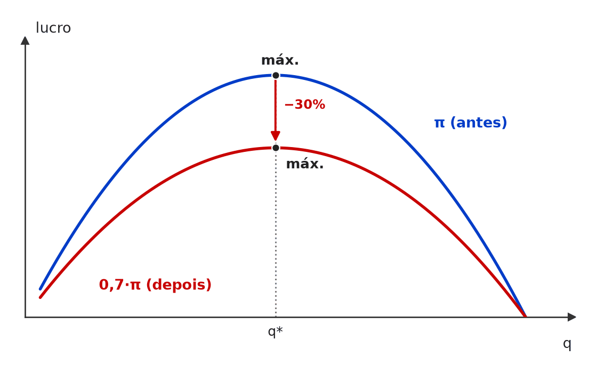 O imposto de 30% sobre o lucro achata a curva de lucro (π vira 0,7·π), mas não muda onde fica o topo: a quantidade que maximiza o lucro antes do imposto, q*, é a mesma que maximiza o lucro depois dele. Preço e quantidade não mudam; só o lucro líquido cai. 🧐 Dissecando a redação do item: [troca de conceito] O item atribui ao imposto sobre o lucro o efeito típico do imposto sobre a quantidade. O “irá acarretar” dá tom de certeza a um resultado que só vale para tributos que mexem na margem. Pista: pergunte se o imposto altera RMg ou CMg; se não altera, nada muda no ponto ótimo. 😈 Para dificultar:
✍️ Reescrita correta: Em condições de monopólio, a imposição de um imposto sobre os lucros não altera o preço nem a quantidade produzida pela firma monopolista, reduzindo apenas o lucro líquido. |
❌ [C/E - Clipping › Simulado Clipping › Equilíbrio do monopólio]Acerca do monopólio, julgue o item a seguir. Item: Em um mercado de monopólio, a empresa monopolista enfrenta a curva de demanda do mercado, o que significa que o preço é fixado pela empresa e a quantidade produzida é determinada pela demanda a esse preço. | ❌ ERRADO Em um mercado de monopólio, a empresa monopolista enfrenta a curva de demanda do mercado, o que significa que o preço é fixado pela empresa e a quantidade produzida é determinada pela demanda a esse preço. 🎯 Em poucas palavras: Na leitura da banca, o monopolista decide primeiro a quantidade (onde RMg = CMg) e só depois “sobe” até a demanda para achar o preço; o item descreve a sequência invertida. ⚠️ Gabarito contestável: Formalmente, escolher o preço e deixar a demanda definir a quantidade leva ao mesmo ponto ótimo que escolher a quantidade e ler o preço na demanda: a curva amarra as duas variáveis, e os manuais (Pindyck e Rubinfeld, Varian) admitem as duas formulações. O item seria defensável como CERTO; mantém-se o ERRADO da fonte, que cobra a sequência didática “quantidade primeiro, preço depois”. 📖 Destrinchando o tema:
🧐 Dissecando a redação do item: [inversão] A primeira oração é verdadeira; o erro, para a banca, está na ordem causal da segunda (preço → quantidade em vez de quantidade → preço). Itens assim são frágeis: o mesmo ponto ótimo é alcançável pelas duas vias. 🔥 Simulados repetem essa fórmula “o monopolista fixa o preço e a demanda define a quantidade”. 😈 Para dificultar:
✍️ Reescrita correta: Em um mercado de monopólio, a empresa monopolista enfrenta a curva de demanda do mercado, o que significa que a quantidade é escolhida onde a receita marginal iguala o custo marginal e o preço é dado pela demanda para essa quantidade. |
[C/E - Nabuco › Pré-TPS/2023 › Equilíbrio do monopólio]Em relação às estruturas de mercado, julgue (C ou E) os itens subsequentes. Item: Para empresas monopolistas, ocorrerá um ótimo de produção sempre que suas receitas marginais forem iguais aos seus custos marginais, pois, nesse ponto, os excedentes serão máximos e, portanto, não haverá peso morto nesse mercado. | ❌ ERRADO Para empresas monopolistas, ocorrerá um ótimo de produção sempre que suas receitas marginais forem iguais aos seus custos marginais, pois, nesse ponto, os excedentes serão máximos e, portanto, não haverá peso morto nesse mercado. 🎯 Em poucas palavras: Como a RMg fica abaixo da demanda, no ótimo RMg = CMg < P: a firma maximiza o lucro, mas produz menos que o eficiente — há peso morto. 📖 Destrinchando o tema:
🧐 Dissecando a redação do item: [nexo indevido] Mesma assertiva de ECO-E2-L00811-1 (Nabuco, sem ano), cobrada de novo no Pré-TPS/2023 🔥. O conector “pois” liga a regra de lucro máximo a uma conclusão de bem-estar que ela não sustenta; desconfie de “portanto, não haverá peso morto” em monopólio de preço único. 😈 Para dificultar:
✍️ Reescrita correta: Para empresas monopolistas, ocorrerá um ótimo de produção sempre que suas receitas marginais forem iguais aos seus custos marginais, mas, nesse ponto, o preço supera o custo marginal, os excedentes não serão máximos e haverá peso morto nesse mercado. |
[C/E - Nabuco › Pré-TPS/2023 › Equilíbrio do monopólio]Em relação às estruturas de mercado de concorrência perfeita e de monopólio, julgue (C ou E) os itens que se seguem. Item: Uma empresa em concorrência perfeita maximiza lucros quando iguala o preço de determinado produto ao seu custo marginal. Uma empresa monopolista maximiza lucros quando sua receita marginal é maior que o custo marginal. | ❌ ERRADO Uma empresa em concorrência perfeita maximiza lucros quando iguala o preço de determinado produto ao seu custo marginal. Uma empresa monopolista maximiza lucros quando sua receita marginal é maior que o custo marginal. 🎯 Em poucas palavras: Qualquer firma maximiza lucro onde RMg = CMg. Na concorrência perfeita, RMg = P, por isso a regra vira P = CMg; o monopolista também iguala RMg e CMg — só que com P acima deles. 📖 Destrinchando o tema:
🧐 Dissecando a redação do item: [meia-verdade · troca de conceito] A 1ª frase é verdadeira e cria a impressão de que cada estrutura tem uma regra própria. O erro está no “maior que”: RMg > CMg descreve um ponto em que ainda vale expandir, não o ótimo. 😈 Para dificultar:
✍️ Reescrita correta: Uma empresa em concorrência perfeita maximiza lucros quando iguala o preço de determinado produto ao seu custo marginal. Uma empresa monopolista maximiza lucros quando sua receita marginal é igual ao custo marginal. |
[C/E - Prof. Rodrigo Teixeira › Intensivo Pré-TPS/2023 › Equilíbrio do monopólio]A teoria da firma permite analisar a relação entre os custos de produção e as estruturas de mercado. A respeito deste tema, julgue o item a seguir. Item: Uma patente de medicamentos introduz um monopólio que sempre trará uma perda líquida para a sociedade, pois os ganhos do avanço científico certamente não compensam as perdas para os consumidores, que pagarão preços acima do custo marginal de produção, gerando peso morto. | ❌ ERRADO Uma patente de medicamentos introduz um monopólio que sempre trará uma perda líquida para a sociedade, pois os ganhos do avanço científico certamente não compensam as perdas para os consumidores, que pagarão preços acima do custo marginal de produção, gerando peso morto. 🎯 Em poucas palavras: O peso morto da patente é real, mas o saldo social é um trade-off: sem a proteção, muitos medicamentos nem existiriam. “Sempre” e “certamente” transformam uma questão empírica em certeza. 📖 Destrinchando o tema:
🧐 Dissecando a redação do item: [modulador absoluto · meia-verdade] A parte final (P > CMg, peso morto) é verdadeira e dá credibilidade; o erro está nos absolutos “sempre” e “certamente”, que negam o ganho dinâmico. 🔥 Em economia, “sempre” e “certamente” sobre saldo de bem-estar quase sempre indicam ERRADO. 😈 Para dificultar:
✍️ Reescrita correta: Uma patente de medicamentos introduz um monopólio que pode trazer uma perda líquida para a sociedade se os ganhos do avanço científico não compensarem as perdas para os consumidores, que pagarão preços acima do custo marginal de produção, gerando peso morto. |
[C/E - FEPESE › Celesc/Economista/2019 › Equilíbrio do monopólio]Acerca do equilíbrio da firma monopolista, julgue o item a seguir (questão adaptada). Item: No ponto de equilíbrio do monopolista, o preço é igual à receita marginal. | ❌ ERRADO No ponto de equilíbrio do monopolista, o preço é igual à receita marginal. 🎯 Em poucas palavras: No monopólio com preço único, RMg < P para toda quantidade positiva: no equilíbrio (RMg = CMg), o preço fica acima da receita marginal e do custo marginal. 📖 Destrinchando o tema:
🧐 Dissecando a redação do item: [troca de conceito] O item transplanta para o monopólio a igualdade P = RMg, que vale para a firma tomadora de preço. A condição de equilíbrio do monopolista é RMg = CMg; o preço vem da demanda e fica acima. Pista: no monopólio, qualquer frase com “preço igual” a RMg ou a CMg é suspeita. 😈 Para dificultar:
✍️ Reescrita correta: No ponto de equilíbrio do monopolista, o preço é maior que a receita marginal, que se iguala ao custo marginal. |
[EXERC - Prof. Rodrigo Teixeira › Micro – Aula 12 › Equilíbrio do monopólio]Um determinado mercado, onde existe uma única firma ofertante, possui curva de custo total dada por CT = 10 + Q², onde CT é o custo total e Q a quantidade produzida. A função de demanda deste mercado é dada pela equação P = 300 − Q. A partir destas informações, responda: Questão: a) Qual a quantidade que maximiza o lucro do monopolista? | 🔵 RESPOSTA a) Q = 75. b) P = 225; markup de 50% sobre o CMg (P = 1,5 × CMg; índice de Lerner = 1/3). c) P = 200. d) Q = 100. e) ganho de 937,5 (peso morto eliminado). f) lucro de 11.240 no monopólio e de 9.990 com preço competitivo. g) o excedente do consumidor sobe de 2.812,5 para 5.000: diferença de 2.187,5. 🎯 Em poucas palavras: Monopólio: RMg = CMg → 300 − 2Q = 2Q → Q = 75, P = 225. Regulação competitiva: P = CMg → 300 − Q = 2Q → Q = 100, P = 200. A diferença de bem-estar é o triângulo de peso morto. 📖 Destrinchando o tema:
📈 No gráfico: 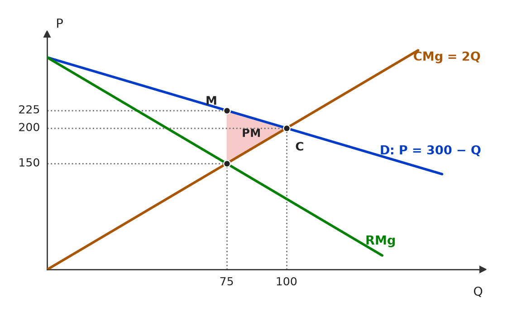 Com P = 300 − Q, RMg = 300 − 2Q e CMg = 2Q, o monopolista produz 75 (RMg = CMg = 150) e cobra 225 na demanda. Com preço igual ao CMg, produz-se 100 a 200; o triângulo entre 75 e 100 é o peso morto de 937,5. 🧐 Dissecando a redação do item: [exercício aberto] Em C/E, a banca recorta esse cálculo em itens como “o markup é de 50% sobre o preço” (ERRADO: 50% é sobre o CMg; sobre o preço, o Lerner dá 1/3) ou “o ganho de bem-estar da regulação é todo apropriado pelos consumidores” (ERRADO: parte vem de transferência da firma). 😈 Para dificultar:
|
[C/E - Nabuco › Equilíbrio do monopólio]Considerando os conceitos de microeconomia, julgue (C ou E) os itens a seguir. Item: No modelo de monopólio, o lucro econômico é positivo tanto no curto quanto no longo prazo, sendo o preço, no longo prazo, igual ao custo médio de produção. | ❌ ERRADO No modelo de monopólio, o lucro econômico é positivo tanto no curto quanto no longo prazo, sendo o preço, no longo prazo, igual ao custo médio de produção. 🎯 Em poucas palavras: Dois erros: o lucro de monopólio pode ser positivo (não é garantido) e, se for positivo, o preço fica acima do CMe. P = CMe significa lucro zero — e a frase se contradiz. 📖 Destrinchando o tema:
🧐 Dissecando a redação do item: [modulador absoluto · troca de conceito] “É positivo” transforma possibilidade em certeza, e “igual ao custo médio” importa a condição de longo prazo da concorrência. A pista é a contradição interna: lucro positivo com P = CMe é impossível. 😈 Para dificultar:
✍️ Reescrita correta: No modelo de monopólio, o lucro econômico pode ser positivo tanto no curto quanto no longo prazo, sendo o preço, no longo prazo, superior ao custo médio de produção sempre que houver lucro. |
[C/E - Nabuco › Equilíbrio do monopólio]Em relação às estruturas de mercado e às falhas de mercado, julgue (C ou E) os seguintes itens. Item: O monopólio é considerado uma estrutura de mercado imperfeita, na qual apenas uma empresa atua nesse segmento. Uma característica do nível ótimo de produção (que maximiza lucro) do monopolista é que a empresa nunca opera na parte inelástica da curva de demanda. | ✅ CERTO O monopólio é considerado uma estrutura de mercado imperfeita, na qual apenas uma empresa atua nesse segmento. Uma característica do nível ótimo de produção (que maximiza lucro) do monopolista é que a empresa nunca opera na parte inelástica da curva de demanda. 🎯 Em poucas palavras: No trecho inelástico a RMg é negativa: reduzir a produção aumentaria a receita e cortaria custos. O ótimo (RMg = CMg > 0) está sempre no trecho elástico. 📖 Destrinchando o tema:
🧐 Dissecando a redação do item: [literalidade · modulador absoluto] O “nunca” costuma ser sinal de ERRADO, mas aqui é exato: com CMg positivo não há exceção. 🔥 A banca repete o tema em várias roupagens: ECO-E2-L00441-1 (versão errada) e ECO-E2-L01192-1 (“sempre na parte elástica”). 😈 Para dificultar:
|
[C/E - Nabuco › Equilíbrio do monopólio]Em relação à teoria microeconômica, julgue (C ou E) os seguintes itens. Item: Para empresas monopolistas, ocorrerá um ótimo de produção sempre que suas receitas marginais forem iguais aos seus custos marginais, pois, nesse ponto, os excedentes serão máximos e, portanto, não haverá peso morto nesse mercado. | ❌ ERRADO Para empresas monopolistas, ocorrerá um ótimo de produção sempre que suas receitas marginais forem iguais aos seus custos marginais, pois, nesse ponto, os excedentes serão máximos e, portanto, não haverá peso morto nesse mercado. 🎯 Em poucas palavras: RMg = CMg maximiza o lucro, não o excedente total. Como P > RMg = CMg, o monopolista produz menos que o eficiente e gera peso morto. 📖 Destrinchando o tema:
📈 No gráfico: 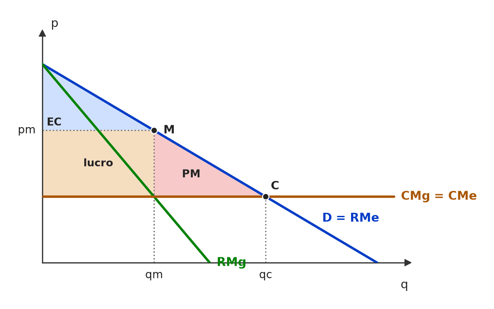 O monopolista produz qm (RMg = CMg) e cobra pm, acima do CMg. Entre qm e qc há consumidores que pagariam mais que o custo de produzir e não compram: esse triângulo (PM) é o peso morto. O lucro é máximo, mas o excedente total não. 🧐 Dissecando a redação do item: [nexo indevido · meia-verdade] A 1ª parte (RMg = CMg) é verdadeira; o erro foi colado no “pois”, que atribui ao ótimo privado uma propriedade do ótimo social. Item gêmeo com o mesmo texto: ECO-E2-L01020-1 (Pré-TPS/2023). 😈 Para dificultar:
✍️ Reescrita correta: Para empresas monopolistas, ocorrerá um ótimo de produção sempre que suas receitas marginais forem iguais aos seus custos marginais, mas, como nesse ponto o preço supera o custo marginal, os excedentes não serão máximos e haverá peso morto nesse mercado. |
[C/E - Banca não identificada › 2023 › Equilíbrio do monopólio]Acerca das falhas de mercado e das estruturas de mercado, julgue o item. Item: O monopólio é uma falha de mercado relacionada à quantidade e à dimensão dos agentes do lado da oferta. | ✅ CERTO O monopólio é uma falha de mercado relacionada à quantidade e à dimensão dos agentes do lado da oferta. 🎯 Em poucas palavras: Com um único vendedor, desaparece a hipótese de muitos agentes pequenos: o monopolista tem poder de mercado, cobra P > CMg, produz menos que o ótimo e gera peso morto — o mercado deixa de ser eficiente no sentido de Pareto. 📖 Destrinchando o tema:
🧐 Dissecando a redação do item: [paráfrase fiel] Reformula a ideia de poder de mercado como falha “do lado da oferta”, ligada a número e tamanho dos vendedores. A dúvida seria se monopólio “conta” como falha de mercado — conta: viola a hipótese de atomicidade e gera ineficiência. 😈 Para dificultar:
|
[C/E - Banca não identificada › 2017 › Equilíbrio do monopólio]Com relação a um produto de um mercado que está sob a situação de monopólio natural, o gráfico a seguir mostra: a curva de demanda, D, que corresponde ao preço de venda, p, para cada quantidade, Q, demandada pelo mercado, e a curva de custo marginal, C, que corresponde ao custo marginal, CMg, quando a produção atinge Q unidades. Nesse gráfico, CMg e p estão medidos na mesma escala do eixo vertical. Tendo como referência as informações e o gráfico apresentados, bem como conceitos a eles pertinentes, julgue o item. 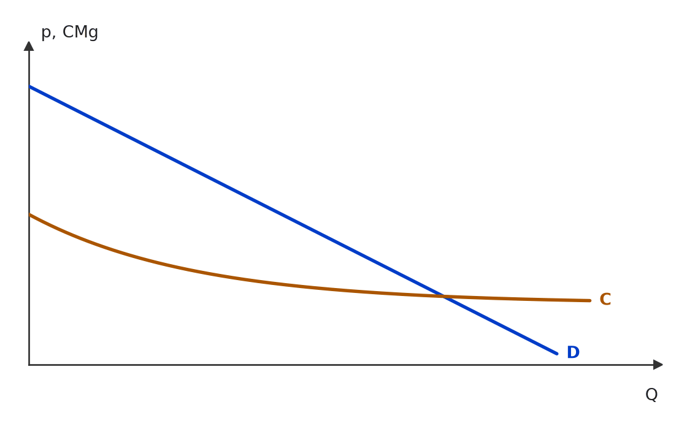 Curva de demanda (D) e curva de custo marginal (C) de um produto sob monopólio natural; CMg e p na mesma escala do eixo vertical. (figura redesenhada; traçado aproximado) Item: A quantidade a ser produzida e vendida no mercado a que se refere o gráfico em questão é igual àquela determinada pelo cruzamento das curvas D e C. | ❌ ERRADO A quantidade a ser produzida e vendida no mercado a que se refere o gráfico em questão é igual àquela determinada pelo cruzamento das curvas D e C. 🎯 Em poucas palavras: O monopolista maximiza lucro onde RMg = CMg. A RMg fica abaixo da demanda e não aparece no gráfico; o cruzamento D × C (P = CMg) é a quantidade da concorrência perfeita, maior que a do monopólio. 📖 Destrinchando o tema:
📈 No gráfico: 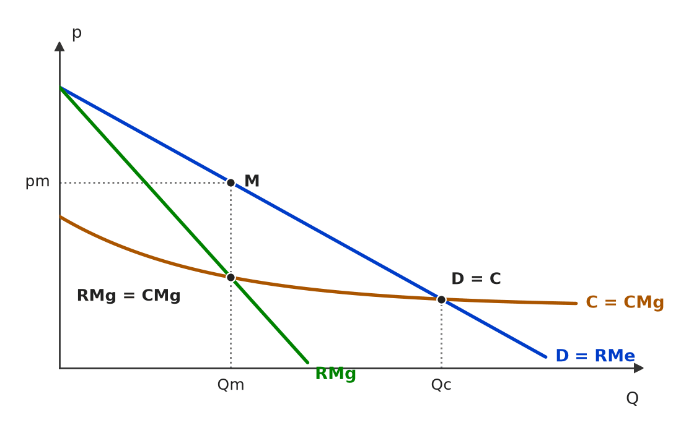 O monopolista produz onde a receita marginal (RMg, abaixo da demanda) cruza o custo marginal C: quantidade Qm, menor que a do cruzamento de D com C (Qc), vendida ao preço pm lido na demanda, acima do custo marginal. 🧐 Dissecando a redação do item: [troca de conceito] O item aplica ao monopólio a regra da concorrência (P = CMg), aproveitando que o gráfico mostra só D e C. Pista: quando a figura de um monopólio não traz a RMg, a banca quer que você a “desenhe” mentalmente. 😈 Para dificultar:
✍️ Reescrita correta: A quantidade a ser produzida e vendida no mercado a que se refere o gráfico em questão é inferior àquela determinada pelo cruzamento das curvas D e C, pois o monopolista produz onde a receita marginal iguala o custo marginal. |
[C/E - Banca não identificada › 2017 › Equilíbrio do monopólio]Com relação a um produto de um mercado que está sob a situação de monopólio natural, o gráfico a seguir mostra: a curva de demanda, D, que corresponde ao preço de venda, p, para cada quantidade, Q, demandada pelo mercado, e a curva de custo marginal, C, que corresponde ao custo marginal, CMg, quando a produção atinge Q unidades. Nesse gráfico, CMg e p estão medidos na mesma escala do eixo vertical. Tendo como referência as informações e o gráfico apresentados, bem como conceitos a eles pertinentes, julgue o item. Curva de demanda (D) e curva de custo marginal (C) de um produto sob monopólio natural; CMg e p na mesma escala do eixo vertical. (figura redesenhada; traçado aproximado) Item: Embora seja decrescente no trecho mostrado no gráfico em apreço, C representa a curva de oferta do monopolista. | ❌ ERRADO Embora seja decrescente no trecho mostrado no gráfico em apreço, C representa a curva de oferta do monopolista. 🎯 Em poucas palavras: O monopolista não tem curva de oferta: a quantidade que oferece a cada preço depende do formato da demanda (via RMg), não só do custo. C é apenas o custo marginal. 📖 Destrinchando o tema:
🧐 Dissecando a redação do item: [troca de conceito] Transfere para o monopólio a regra da firma competitiva (CMg = oferta). A concessiva “embora seja decrescente” desvia a atenção para a inclinação, como se ela fosse o único problema. 😈 Para dificultar:
✍️ Reescrita correta: Embora seja decrescente no trecho mostrado no gráfico em apreço, C não representa uma curva de oferta: o monopolista não possui curva de oferta, e C é seu custo marginal. |
[C/E - Banca não identificada › Equilíbrio do monopólio]Acerca dos efeitos de um imposto específico em um mercado monopolista, julgue o item. Item: Suponha que o governo impõe um imposto específico (por unidade) sobre o produto do monopolista. Esse imposto aumenta o custo marginal de cada unidade produzida. | ✅ CERTO Suponha que o governo impõe um imposto específico (por unidade) sobre o produto do monopolista. Esse imposto aumenta o custo marginal de cada unidade produzida. 🎯 Em poucas palavras: Imposto específico = valor fixo t por unidade: cada unidade a mais passa a custar CMg + t. A curva de custo marginal do monopolista sobe paralelamente em t. 📖 Destrinchando o tema:
🧐 Dissecando a redação do item: [literalidade] Item conceitual direto: específico → custo marginal. A banca costuma testar o vizinho — imposto sobre o lucro ou de valor fixo —, que não mexe no CMg e não altera a decisão de produção. 😈 Para dificultar:
|
[C/E - Banca não identificada › Equilíbrio do monopólio]Acerca dos efeitos de um imposto específico em um mercado monopolista, julgue o item. Item: Em monopólio, a perda de bem-estar adicional do imposto pode ser menor do que na concorrência perfeita, porque o mercado já operava com preço acima do ótimo. | ✅ CERTO Em monopólio, a perda de bem-estar adicional do imposto pode ser menor do que na concorrência perfeita, porque o mercado já operava com preço acima do ótimo. 🎯 Em poucas palavras: O CERTO se apoia só no “pode”; a justificativa está invertida: como o monopólio já opera com P > CMg, cada unidade que o imposto elimina custa à sociedade P − CMg > 0, o que tende a tornar a perda adicional maior, não menor. ⚠️ Gabarito contestável: O gabarito indicado é CERTO e foi mantido. O “pode” só se sustenta para impostos muito altos: com demanda linear e CMg constante, a perda adicional no monopólio é menor que a da concorrência apenas se t > 2/3 da distância entre o intercepto da demanda e o custo. Para impostos usuais ela é maior, e a razão dada no item (preço já acima do ótimo) é justamente o motivo de a perda ser maior. A resposta mais defensável seria ERRADO; formulação correta: “em monopólio, a perda adicional do imposto tende a ser maior do que na concorrência perfeita, porque o mercado já operava com preço acima do custo marginal”. 📖 Destrinchando o tema:
🧐 Dissecando a redação do item: [modulador relativo] O “pode” protege a afirmação principal — e só ele sustenta o CERTO —, mas o nexo causal (“porque já operava com preço acima do ótimo”) é o oposto do resultado da teoria do segundo melhor. Em prova, desconfie de item que usa uma distorção prévia para concluir que a nova distorção custa menos. 😈 Para dificultar:
|
[C/E - Banca não identificada › Equilíbrio do monopólio]Acerca do monopólio, julgue o item a seguir. Item: O peso morto ocorre quando o monopolista decide produzir e vender a quantidade em que as curvas de receita marginal e custo marginal se cruzam. | ✅ CERTO O peso morto ocorre quando o monopolista decide produzir e vender a quantidade em que as curvas de receita marginal e custo marginal se cruzam. 🎯 Em poucas palavras: Em RMg = CMg o monopolista maximiza o lucro, mas, como a RMg fica abaixo da demanda, essa quantidade é menor que a eficiente (P = CMg): surge o peso morto. 📖 Destrinchando o tema:
📈 No gráfico: 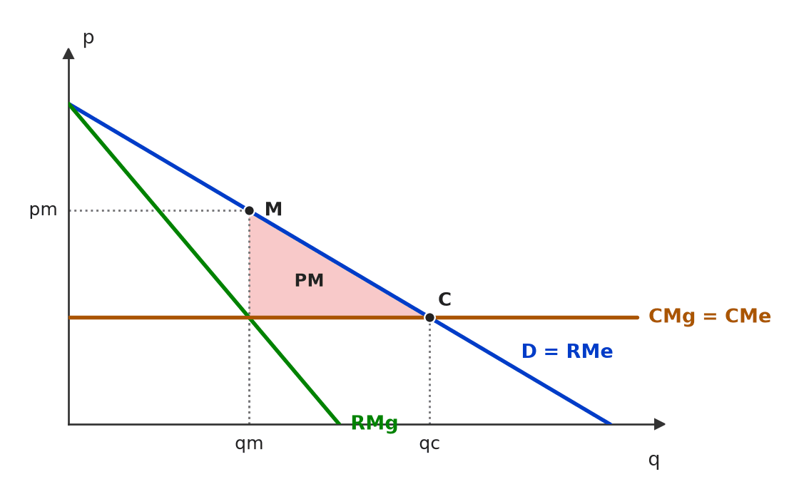 O monopolista produz qm, onde RMg = CMg, e cobra pm na demanda (ponto M). Entre qm e qc, cada unidade vale para o consumidor mais do que custa (D acima do CMg), mas não é produzida: o triângulo PM é o peso morto. 🧐 Dissecando a redação do item: [paráfrase fiel] O item amarra a regra de decisão (RMg = CMg) à sua consequência de bem-estar. O risco é o candidato achar que “maximizar lucro” é eficiente; a pista é lembrar que P > RMg no monopólio. 😈 Para dificultar:
|
[C/E - Banca não identificada › Equilíbrio do monopólio]Acerca do monopólio, julgue o item a seguir. Item: Para o monopolista, a curva de receita média é a curva de demanda do mercado. | ✅ CERTO Para o monopolista, a curva de receita média é a curva de demanda do mercado. 🎯 Em poucas palavras: Receita média = RT/Q = P·Q/Q = P. Como o preço que o monopolista obtém por cada quantidade é dado pela demanda de mercado, RMe = demanda. 📖 Destrinchando o tema:
🧐 Dissecando a redação do item: [literalidade] Definição de manual, cobrada para testar se o candidato confunde receita média com receita marginal. A troca típica que tornaria o item ERRADO é “receita marginal” no lugar de “receita média”. 😈 Para dificultar:
|
[C/E - Banca não identificada › Equilíbrio do monopólio]Acerca do monopólio, julgue o item a seguir. Item: A estrutura de mercado em monopólio pode ser caracterizada por apresentar fortes barreiras que impedem o surgimento de competidores. | ✅ CERTO A estrutura de mercado em monopólio pode ser caracterizada por apresentar fortes barreiras que impedem o surgimento de competidores. 🎯 Em poucas palavras: Sem barreiras à entrada, o lucro de monopólio atrairia concorrentes e o monopólio desapareceria. As barreiras são o que o sustenta no longo prazo. 📖 Destrinchando o tema:
🧐 Dissecando a redação do item: [literalidade · modulador relativo] Item conceitual, salvo pelo “pode ser caracterizada”. A versão ERRADA típica nega as barreiras ou afirma que o lucro do monopólio se dissipa no longo prazo. 😈 Para dificultar:
|
[C/E - Banca não identificada › Equilíbrio do monopólio]Acerca do monopólio, julgue o item a seguir. Item: Em uma situação de monopólio, a firma maximiza o seu lucro quando o custo marginal é igual à receita marginal. | ✅ CERTO Em uma situação de monopólio, a firma maximiza o seu lucro quando o custo marginal é igual à receita marginal. 🎯 Em poucas palavras: RMg = CMg é a condição de lucro máximo de qualquer firma. No monopólio ela não equivale a P = CMg, porque a RMg fica abaixo do preço. 📖 Destrinchando o tema:
🧐 Dissecando a redação do item: [literalidade] Regra de ouro da firma. A banca a torna ERRADA trocando a receita marginal por “preço” ou “receita média” — aí o item descreve a concorrência perfeita. 😈 Para dificultar:
|
[C/E - Banca não identificada › Equilíbrio do monopólio]Acerca do monopólio, julgue o item a seguir. Item: Um monopolista estabelece o preço de mercado quando decide o quanto cobrar. | ❌ ERRADO Um monopolista estabelece o preço de mercado quando decide o quanto cobrar. 🎯 Em poucas palavras: Na leitura da fonte, o monopolista decide a quantidade (RMg = CMg); o preço sai da demanda no ponto correspondente — ele não “escolhe o preço” à parte. ⚠️ Gabarito contestável: O monopolista é, por definição, formador de preço, e escolher o preço (deixando a demanda fixar a quantidade) leva ao mesmo ótimo que escolher a quantidade. Lido literalmente, o item seria CERTO. Mantém-se o ERRADO da fonte, cuja tese é que a variável de decisão é a quantidade e o preço é consequência dela. 📖 Destrinchando o tema:
🧐 Dissecando a redação do item: [inversão] O gabarito depende da ordem de decisão (preço × quantidade), não de erro conceitual grave — por isso o item é frágil. Em prova oficial, prefira a tese “quantidade em RMg = CMg, preço na demanda”; desconfie de afirmações de que o monopolista cobra “o preço que quiser”. 😈 Para dificultar:
✍️ Reescrita correta: Um monopolista escolhe a quantidade em que a receita marginal iguala o custo marginal, e o preço de mercado é dado pela demanda para essa quantidade. |
[C/E - Banca não identificada › Equilíbrio do monopólio]Acerca do monopólio, julgue o item a seguir. Item: Um monopolista vende um produto visando maximizar seu lucro. Com esse objetivo, ele deve produzir uma quantidade tal que o custo marginal seja igual ao preço de venda. | ❌ ERRADO Um monopolista vende um produto visando maximizar seu lucro. Com esse objetivo, ele deve produzir uma quantidade tal que o custo marginal seja igual ao preço de venda. 🎯 Em poucas palavras: CMg = P é a regra da concorrência perfeita. O monopolista iguala o CMg à receita marginal, que fica abaixo do preço; resultado: P > CMg. 📖 Destrinchando o tema:
🧐 Dissecando a redação do item: [troca de conceito] Troca “receita marginal” por “preço de venda”, importando a regra da concorrência perfeita. 🔥 Erro recorrente em simulados e provas: P = CMg atribuído ao monopolista. 😈 Para dificultar:
✍️ Reescrita correta: Um monopolista vende um produto visando maximizar seu lucro. Com esse objetivo, ele deve produzir uma quantidade tal que o custo marginal seja igual à receita marginal. |
[C/E - Banca não identificada › Equilíbrio do monopólio]Acerca do monopólio, julgue o item a seguir. Item: No monopólio há produtos substitutos próximos. | ❌ ERRADO No monopólio há produtos substitutos próximos. 🎯 Em poucas palavras: O monopólio pressupõe produto sem substitutos próximos: se houvesse, os consumidores migrariam ao menor aumento de preço e o poder de mercado sumiria. 📖 Destrinchando o tema:
🧐 Dissecando a redação do item: [troca de conceito] Atribui ao monopólio um traço da concorrência monopolística. Item curto e direto: a palavra decisiva é o verbo “há”. 😈 Para dificultar:
✍️ Reescrita correta: No monopólio não há produtos substitutos próximos. |
[C/E - Banca não identificada › Equilíbrio do monopólio]Acerca do monopólio, julgue o item a seguir. Item: A curva de demanda individual do monopolista é igual à curva de demanda do mercado. Isso porque o monopolista é o próprio mercado. | ✅ CERTO A curva de demanda individual do monopolista é igual à curva de demanda do mercado. Isso porque o monopolista é o próprio mercado. 🎯 Em poucas palavras: Sendo o único vendedor, o monopolista atende sozinho toda a demanda: a demanda que ele enfrenta é a demanda de mercado, negativamente inclinada. 📖 Destrinchando o tema:
🧐 Dissecando a redação do item: [literalidade] Definição direta, com justificativa correta. A versão ERRADA clássica diria que a demanda do monopolista é “horizontal” ou “perfeitamente elástica”, trocando-a pela da firma competitiva. 😈 Para dificultar:
|
[C/E - Banca não identificada › Equilíbrio do monopólio]Acerca do monopólio, julgue o item a seguir. Item: Um monopólio irá sempre produzir um nível de produto que é igual ao nível socialmente eficiente. | ❌ ERRADO Um monopólio irá sempre produzir um nível de produto que é igual ao nível socialmente eficiente. 🎯 Em poucas palavras: O monopolista produz onde RMg = CMg, com P > CMg: a quantidade fica abaixo da eficiente (P = CMg), e surge peso morto. 📖 Destrinchando o tema:
🧐 Dissecando a redação do item: [modulador absoluto · inversão] O “sempre” é o alarme, e o conteúdo inverte o resultado padrão (subprodução). Quem lembra que maximizar lucro ≠ maximizar bem-estar resolve na hora. 😈 Para dificultar:
✍️ Reescrita correta: Um monopólio tende a produzir um nível de produto inferior ao nível socialmente eficiente. |
[C/E - FGV › Senado Federal/Consultor Legislativo/2022 › Markup, elasticidade e poder de mercado]Julgue o item a seguir, adaptado de questão da FGV, relativo ao mark-up do monopolista e à elasticidade-preço da demanda. Item: O mark-up do monopolista tende a ser menor quanto mais elástica for a demanda, sendo que se essa for perfeitamente elástica, o preço será igual à solução de concorrência perfeita. | ✅ CERTO O mark-up do monopolista tende a ser menor quanto mais elástica for a demanda, sendo que se essa for perfeitamente elástica, o preço será igual à solução de concorrência perfeita. 🎯 Em poucas palavras: Markup: (P − CMg)/P = 1/|ε|. Se |ε| cresce, o markup cai; com |ε| → ∞, 1/|ε| = 0 e P = CMg — o preço de concorrência perfeita. 📖 Destrinchando o tema:
🧐 Dissecando a redação do item: [literalidade · modulador relativo] Reproduz a regra do markup e o seu caso-limite. O “tende a” suaviza a primeira oração; a segunda é o teste de extremo que a FGV gosta de usar. Se a banca trocasse “perfeitamente elástica” por “perfeitamente inelástica”, o item viraria ERRADO. 😈 Para dificultar:
|
[C/E - IDEG – Prof. Bozan › Pré-TPS/2026 › Markup, elasticidade e poder de mercado]Analise as assertivas abaixo com relação às características e maximização em um monopólio. Item: A maximização do lucro em um monopólio ocorre quando a receita marginal se iguala ao custo marginal, mas, diferentemente do mercado perfeito, o preço é significativamente mais alto do que o custo marginal, o que leva a um mark-up elevado e a uma ineficiência alocativa no mercado. | ✅ CERTO A maximização do lucro em um monopólio ocorre quando a receita marginal se iguala ao custo marginal, mas, diferentemente do mercado perfeito, o preço é significativamente mais alto do que o custo marginal, o que leva a um mark-up elevado e a uma ineficiência alocativa no mercado. 🎯 Em poucas palavras: RMg = CMg com P > CMg: a distância entre preço e custo marginal é o markup, e a produção abaixo da eficiente é a ineficiência alocativa (peso morto). 📖 Destrinchando o tema:
🧐 Dissecando a redação do item: [paráfrase fiel · modulador relativo] Síntese correta do equilíbrio de monopólio. O único ponto discutível é o “significativamente”, que a banca tratou como característico (o preço supera o CMg); a magnitude, a rigor, depende da elasticidade. 😈 Para dificultar:
|
❌ [C/E - Nabuco › Markup, elasticidade e poder de mercado]A respeito das estruturas de mercado, julgue (C ou E) os itens a seguir. Item: Um monopolista, para maximizar seu lucro, sempre operará na porção inelástica da curva de demanda, pois assim consegue impor preços mais elevados. | ❌ ERRADO Um monopolista, para maximizar seu lucro, sempre operará na porção inelástica da curva de demanda, pois assim consegue impor preços mais elevados. 🎯 Em poucas palavras: É o contrário: o monopolista opera sempre na porção elástica (|ε| > 1). No trecho inelástico a RMg é negativa e não pode igualar um CMg positivo. 📖 Destrinchando o tema:
📈 No gráfico: 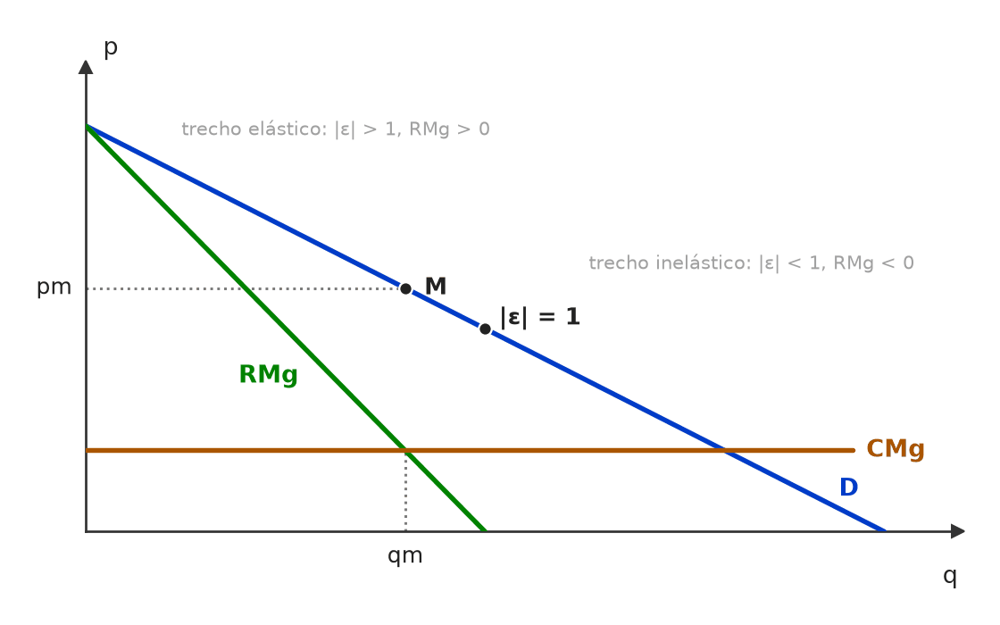 Na demanda linear, a RMg zera no ponto médio, onde |ε| = 1. Abaixo dele (trecho inelástico) a RMg é negativa e não pode igualar um CMg positivo: o ótimo do monopolista (RMg = CMg) cai sempre no trecho elástico. 🧐 Dissecando a redação do item: [inversão · nexo indevido] O item troca elástica por inelástica e cola uma justificativa plausível (“impor preços mais elevados”), apoiada na ideia intuitiva de que demanda inelástica = poder de mercado. Esse vínculo vale para o markup (Lerner), não para o trecho da curva em que a firma opera. 🔥 Tema recorrente: monopólio × trecho elástico. 😈 Para dificultar:
✍️ Reescrita correta: Um monopolista, para maximizar seu lucro, sempre operará na porção elástica da curva de demanda, pois só nela a receita marginal é positiva e pode igualar o custo marginal. |
[C/E - Nabuco › Markup, elasticidade e poder de mercado]Em relação à teoria microeconômica, julgue (C ou E) os itens a seguir. Item: Sabendo-se que o índice de Lerner (L) tem sempre valor entre 0 e 1, então, para uma empresa perfeitamente competitiva, L = 0, e quanto maior for L, maior será o grau de poder de monopólio. | ✅ CERTO Sabendo-se que o índice de Lerner (L) tem sempre valor entre 0 e 1, então, para uma empresa perfeitamente competitiva, L = 0, e quanto maior for L, maior será o grau de poder de monopólio. 🎯 Em poucas palavras: O índice de Lerner é L = (P − CMg)/P. Na concorrência perfeita P = CMg, logo L = 0; quanto maior a margem do preço sobre o CMg, maior o poder de mercado. 📖 Destrinchando o tema:
🧐 Dissecando a redação do item: [literalidade] Definição de manual reproduzida quase à letra. O risco está nos extremos: quem confunde Lerner com markup P/CMg (que vale 1, e não 0, na concorrência perfeita) marca ERRADO. 😈 Para dificultar:
|
[C/E - Nabuco › Markup, elasticidade e poder de mercado]Em relação à microeconomia, julgue (C ou E) os seguintes itens. Item: De acordo com a regra de mark-up, o poder de mercado de um monopolista é diretamente relacionado à elasticidade-preço da demanda; quanto mais elástica for a demanda, maior será o mark-up do preço sobre o custo marginal. | ❌ ERRADO De acordo com a regra de mark-up, o poder de mercado de um monopolista é diretamente relacionado à elasticidade-preço da demanda; quanto mais elástica for a demanda, maior será o mark-up do preço sobre o custo marginal. 🎯 Em poucas palavras: A relação é inversa: (P − CMg)/P = 1/|ε|. Demanda mais elástica → consumidores fogem do aumento de preço → markup menor. 📖 Destrinchando o tema:
🧐 Dissecando a redação do item: [inversão] O item inverte o sinal da relação duas vezes, de modo coerente (“diretamente” e “maior”), o que lhe dá aparência de raciocínio fechado. Basta testar o extremo: demanda perfeitamente elástica = concorrência perfeita = markup nulo. 😈 Para dificultar:
✍️ Reescrita correta: De acordo com a regra de mark-up, o poder de mercado de um monopolista é inversamente relacionado à elasticidade-preço da demanda; quanto mais elástica for a demanda, menor será o mark-up do preço sobre o custo marginal. |
[C/E - Nabuco › Markup, elasticidade e poder de mercado]Sobre as estruturas de mercado, julgue (C ou E) os seguintes itens. Item: O mark-up de um monopolista é inversamente proporcional à elasticidade-preço da demanda; portanto, quanto mais inelástica for a demanda, menor será o poder de mercado da firma. | ❌ ERRADO O mark-up de um monopolista é inversamente proporcional à elasticidade-preço da demanda; portanto, quanto mais inelástica for a demanda, menor será o poder de mercado da firma. 🎯 Em poucas palavras: A premissa está certa (L = 1/|ε|), mas a conclusão a inverte: demanda mais inelástica (|ε| menor) dá markup e poder de mercado maiores. 📖 Destrinchando o tema:
🧐 Dissecando a redação do item: [meia-verdade · inversão] A 1ª oração é verdadeira e o “portanto” sugere que a conclusão decorre dela; mas a dedução foi feita com o sinal trocado. Teste rápido: se “inversamente”, então elasticidade baixa → markup alto. 😈 Para dificultar:
✍️ Reescrita correta: O mark-up de um monopolista é inversamente proporcional à elasticidade-preço da demanda; portanto, quanto mais inelástica for a demanda, maior será o poder de mercado da firma. |
[C/E - Nabuco › Pré-TPS/2023 › Markup, elasticidade e poder de mercado]Em relação às estruturas de mercado, julgue (C ou E) os itens subsequentes. Item: Quanto menor a elasticidade-preço da demanda pelo produto produzido por uma empresa monopolista, maior será o índice de Lerner. | ✅ CERTO Quanto menor a elasticidade-preço da demanda pelo produto produzido por uma empresa monopolista, maior será o índice de Lerner. 🎯 Em poucas palavras: Pela regra do markup, L = (P − CMg)/P = −1/ε. Elasticidade menor em módulo → o inverso é maior → Lerner maior. 📖 Destrinchando o tema:
🧐 Dissecando a redação do item: [literalidade] Item idêntico a ECO-E2-L00867-1, de outra prova: sinal de tema recorrente 🔥. A única forma de errar é ler “menor elasticidade” com sinal (−4 < −2) em vez de módulo. 😈 Para dificultar:
|
[C/E - Nabuco › Pré-TPS/2023 › Markup, elasticidade e poder de mercado]Em relação às estruturas de mercado de concorrência perfeita e de monopólio, julgue (C ou E) os itens que se seguem. Item: Uma empresa monopolista sempre atua na parte elástica da curva de demanda. | ✅ CERTO Uma empresa monopolista sempre atua na parte elástica da curva de demanda. 🎯 Em poucas palavras: O ótimo exige RMg = CMg > 0, e a RMg só é positiva onde |ε| > 1. No trecho inelástico, RMg < 0: reduzir a produção elevaria a receita e o lucro. 📖 Destrinchando o tema:
🧐 Dissecando a redação do item: [literalidade · modulador absoluto] O “sempre” assusta, mas aqui é a regra de manual (o único caso-limite, CMg nulo, não é cobrado). 🔥 O tema volta em versões invertidas: ECO-E2-L00441-1 (“porção inelástica” → ERRADO). 😈 Para dificultar:
|
[C/E - Nabuco › Pré-TPS/2023 › Markup, elasticidade e poder de mercado]Em relação às estruturas de mercado de concorrência perfeita e de monopólio, julgue (C ou E) os itens que se seguem. Item: Quanto mais elástica a curva de demanda pelo produto de um monopolista, maior é o seu poder de monopólio. | ❌ ERRADO Quanto mais elástica a curva de demanda pelo produto de um monopolista, maior é o seu poder de monopólio. 🎯 Em poucas palavras: O índice de Lerner é L = 1/|ε|: demanda mais elástica → markup menor → menos poder de monopólio. 📖 Destrinchando o tema:
🧐 Dissecando a redação do item: [inversão] Inversão pura do sentido da relação. Par espelhado na mesma bateria de questões: ECO-E2-L01197-1 (“menos elástica… maior” → CERTO). Teste-limite: demanda infinitamente elástica = firma competitiva = poder nulo. 😈 Para dificultar:
✍️ Reescrita correta: Quanto mais elástica a curva de demanda pelo produto de um monopolista, menor é o seu poder de monopólio. |
[C/E - Nabuco › Pré-TPS/2023 › Markup, elasticidade e poder de mercado]A respeito das empresas monopolistas, julgue (C ou E) os itens subsequentes. Item: Quanto menos elástica a curva de demanda pelo produto de um monopolista, maior é o seu poder de monopólio no mercado. | ✅ CERTO Quanto menos elástica a curva de demanda pelo produto de um monopolista, maior é o seu poder de monopólio no mercado. 🎯 Em poucas palavras: Pela regra do markup, (P − CMg)/P = 1/|ε|: demanda menos elástica permite preço mais distante do custo marginal — mais poder de monopólio. 📖 Destrinchando o tema:
🧐 Dissecando a redação do item: [literalidade] Espelho de ECO-E2-L01193-1 (“mais elástica… maior” → ERRADO), na mesma bateria de questões. A banca alterna o par para testar se o candidato guardou o sentido da relação. 😈 Para dificultar:
|
❌ [C/E - Prof. Rodrigo Teixeira › Intensivo Pré-TPS/2023 › Markup, elasticidade e poder de mercado]A respeito da teoria da firma, julgue o item a seguir. Item: O poder de monopólio pode ser medido pelo mark up, que é a diferença entre o preço e o custo médio de produção. | ❌ ERRADO O poder de monopólio pode ser medido pelo mark up, que é a diferença entre o preço e o custo médio de produção. 🎯 Em poucas palavras: O poder de monopólio se mede pela distância entre preço e custo marginal, em geral relativa ao preço: índice de Lerner L = (P − CMg)/P. P − CMe é lucro por unidade, não poder de mercado. 📖 Destrinchando o tema:
🧐 Dissecando a redação do item: [troca de conceito] A 1ª parte é verdadeira e dá confiança; o erro está numa palavra: “médio” no lugar de “marginal”. Pista: sempre que o item definir markup ou poder de mercado, confira qual custo é a referência. 😈 Para dificultar:
✍️ Reescrita correta: O poder de monopólio pode ser medido pelo mark up, que é a diferença entre o preço e o custo marginal de produção, em geral relativa ao preço (índice de Lerner). |
[C/E - Prof. Rodrigo Teixeira › Intensivo Pré-TPS/2023 › Markup, elasticidade e poder de mercado]A respeito dos conceitos e teorias da microeconomia, julgue o item a seguir. Item: Num monopólio, o mark up é maior quanto mais inelástica ao preço for a demanda. | ✅ CERTO Num monopólio, o mark up é maior quanto mais inelástica ao preço for a demanda. 🎯 Em poucas palavras: Pela regra de Lerner, no ótimo do monopolista (P − CMg)/P = 1/|ε|: quanto menor |ε| (demanda mais inelástica), maior o markup. 📖 Destrinchando o tema:
🧐 Dissecando a redação do item: [literalidade] Item que reproduz a regra de Lerner em palavras. O risco é a inversão mental: quem associa “mais elástica” a “mais reação” pode achar que a margem cresce com a elasticidade. Pista: elasticidade alta = concorrência próxima = margem pequena. 😈 Para dificultar:
|
[C/E - Nabuco › Markup, elasticidade e poder de mercado]Em relação às estruturas de mercado, julgue (C ou E) os itens que se seguem. Item: Quanto menor a elasticidade-preço da demanda pelo produto produzido por uma empresa monopolista, maior será o índice de Lerner. | ✅ CERTO Quanto menor a elasticidade-preço da demanda pelo produto produzido por uma empresa monopolista, maior será o índice de Lerner. 🎯 Em poucas palavras: No ótimo, L = (P − CMg)/P = 1/|ε|: elasticidade menor (em módulo) → índice de Lerner maior → mais poder de monopólio. 📖 Destrinchando o tema:
🧐 Dissecando a redação do item: [literalidade] Aplicação direta da fórmula. A armadilha é de sinal: a banca escreve “menor elasticidade” sem dizer “em módulo”. Item idêntico em outra prova: ECO-E2-L01018-1 (Pré-TPS/2023). 😈 Para dificultar:
|
[C/E - Banca não identificada › 2018 › Markup, elasticidade e poder de mercado]Acerca do poder de mercado do monopolista, julgue o item. Item: De acordo com a regra de mark-up, quanto mais preço-elástica for a curva de demanda do mercado, maior será o poder de mercado do monopolista. | ❌ ERRADO De acordo com a regra de mark-up, quanto mais preço-elástica for a curva de demanda do mercado, maior será o poder de mercado do monopolista. 🎯 Em poucas palavras: Regra do markup: (P − CMg)/P = 1/|ε|. Demanda mais elástica → margem menor → menos poder de mercado; no limite (|ε| → ∞), P = CMg, como na concorrência. 📖 Destrinchando o tema:
🧐 Dissecando a redação do item: [inversão] Troca o sentido da relação na regra do markup. 🔥 É o mesmo erro de itens sobre o preço do monopolista “tanto maior quanto maior a elasticidade”: o tema se repete com redações diferentes. 😈 Para dificultar:
✍️ Reescrita correta: De acordo com a regra de mark-up, quanto mais preço-elástica for a curva de demanda do mercado, menor será o poder de mercado do monopolista. |
[C/E - Banca não identificada › 2018 › Markup, elasticidade e poder de mercado]Acerca do poder de mercado do monopolista, julgue o item. Item: Curva de demanda de mercado com módulo da elasticidade preço da demanda inferior a um pode ser indicativa da presença de barreiras à entrada. | ✅ CERTO Curva de demanda de mercado com módulo da elasticidade preço da demanda inferior a um pode ser indicativa da presença de barreiras à entrada. 🎯 Em poucas palavras: Demanda inelástica (|ε| < 1) revela ausência de substitutos próximos — condição em que um vendedor pode ter grande poder de mercado. Se esse poder persiste, é porque algo impede a entrada: o item só afirma que isso “pode” ser indício. 📖 Destrinchando o tema:
🧐 Dissecando a redação do item: [modulador relativo] Afirmação causal frouxa, salva pelo “pode ser indicativa”. Em itens assim, a banca costuma aceitar a relação plausível (pouco substituto → poder de mercado → barreiras); troque “pode ser indicativa” por “comprova” e o item vira ERRADO. 😈 Para dificultar:
|
[C/E - Banca não identificada › 2017 › Markup, elasticidade e poder de mercado]Com relação a um produto de um mercado que está sob a situação de monopólio natural, o gráfico a seguir mostra: a curva de demanda, D, que corresponde ao preço de venda, p, para cada quantidade, Q, demandada pelo mercado, e a curva de custo marginal, C, que corresponde ao custo marginal, CMg, quando a produção atinge Q unidades. Nesse gráfico, CMg e p estão medidos na mesma escala do eixo vertical. Tendo como referência as informações e o gráfico apresentados, bem como conceitos a eles pertinentes, julgue o item. Curva de demanda (D) e curva de custo marginal (C) de um produto sob monopólio natural; CMg e p na mesma escala do eixo vertical. (figura redesenhada; traçado aproximado) Item: O preço de equilíbrio para venda de um produto monopolista é dado em função do custo marginal e da elasticidade-preço da demanda, sendo tanto maior quanto maior for o módulo da elasticidade-preço da demanda, para um dado custo marginal, no trecho em que a demanda for elástica. | ❌ ERRADO O preço de equilíbrio para venda de um produto monopolista é dado em função do custo marginal e da elasticidade-preço da demanda, sendo tanto maior quanto maior for o módulo da elasticidade-preço da demanda, para um dado custo marginal, no trecho em que a demanda for elástica. 🎯 Em poucas palavras: Pela regra do markup, P = CMg / (1 − 1/|ε|): quanto maior o |ε|, menor o preço. Consumidor sensível a preço limita o poder do monopolista. 📖 Destrinchando o tema:
🧐 Dissecando a redação do item: [inversão] Todo o arcabouço está correto (função de CMg e de ε, trecho elástico); só a direção da relação foi invertida. 🔥 Itens de markup quase sempre testam o sentido: elasticidade e preço andam em direções opostas. 😈 Para dificultar:
✍️ Reescrita correta: O preço de equilíbrio para venda de um produto monopolista é dado em função do custo marginal e da elasticidade-preço da demanda, sendo tanto menor quanto maior for o módulo da elasticidade-preço da demanda, para um dado custo marginal, no trecho em que a demanda for elástica. |
[C/E - Banca não identificada › Markup, elasticidade e poder de mercado]Acerca do poder de mercado, julgue o item. Item: Comparando a empresa A (concorrência perfeita) e a empresa B (monopólio): a diferença entre o preço e o custo marginal dividida pelo preço revela um indicador do poder de monopólio da empresa B. | ✅ CERTO Comparando a empresa A (concorrência perfeita) e a empresa B (monopólio): a diferença entre o preço e o custo marginal dividida pelo preço revela um indicador do poder de monopólio da empresa B. 🎯 Em poucas palavras: É o índice de Lerner: L = (P − CMg)/P. Vale 0 na concorrência perfeita (empresa A, P = CMg) e é positivo no monopólio (empresa B). 📖 Destrinchando o tema:
🧐 Dissecando a redação do item: [literalidade] Descreve a fórmula de Lerner sem nomeá-la. Erros típicos que a banca enxertaria: dividir pelo custo marginal (isso é o markup sobre o custo, outra medida) ou trocar CMg por custo médio. 😈 Para dificultar:
|
[C/E - Banca não identificada › Markup, elasticidade e poder de mercado]Acerca do monopólio, julgue o item a seguir. Item: O markup na fixação de preços do monopólio tende a se reduzir conforme a elasticidade-preço da demanda diminui. | ❌ ERRADO O markup na fixação de preços do monopólio tende a se reduzir conforme a elasticidade-preço da demanda diminui. 🎯 Em poucas palavras: Demanda menos elástica = consumidor menos sensível ao preço = markup maior. O markup é inversamente proporcional à elasticidade: (P − CMg)/P = 1/|ε|. 📖 Destrinchando o tema:
🧐 Dissecando a redação do item: [inversão] O item inverte o sinal da relação entre markup e elasticidade. Quem decorou a fórmula 1/|ε| resolve em segundos; quem pensa “menos elástico = mais rígido = menos margem” cai. Pista: “diminui” × “se reduzir” na mesma frase — relação direta afirmada onde ela é inversa. 😈 Para dificultar:
✍️ Reescrita correta: O markup na fixação de preços do monopólio tende a aumentar conforme a elasticidade-preço da demanda diminui. |
[C/E - Banca não identificada › Markup, elasticidade e poder de mercado]Acerca do monopólio, julgue o item a seguir. Item: O Mark-up é um indicador do poder de monopólio. | ✅ CERTO O Mark-up é um indicador do poder de monopólio. 🎯 Em poucas palavras: O markup mede quanto o preço supera o custo marginal. Em concorrência perfeita ele é nulo (P = CMg); quanto maior, maior o poder de mercado. 📖 Destrinchando o tema:
🧐 Dissecando a redação do item: [literalidade] Afirmação de manual. A banca poderia torná-la ERRADA trocando o denominador (“preço sobre o custo médio”) ou a conclusão (“indicador do lucro do monopólio”). 😈 Para dificultar:
|
[C/E - Banca não identificada › Markup, elasticidade e poder de mercado]Acerca do monopólio, julgue o item a seguir. Item: O monopolista atua na parte inelástica da curva de demanda. | ❌ ERRADO O monopolista atua na parte inelástica da curva de demanda. 🎯 Em poucas palavras: Com CMg > 0, o ótimo RMg = CMg exige RMg > 0, o que só ocorre onde |ε| > 1: o monopolista atua no trecho elástico. 📖 Destrinchando o tema:
📈 No gráfico: 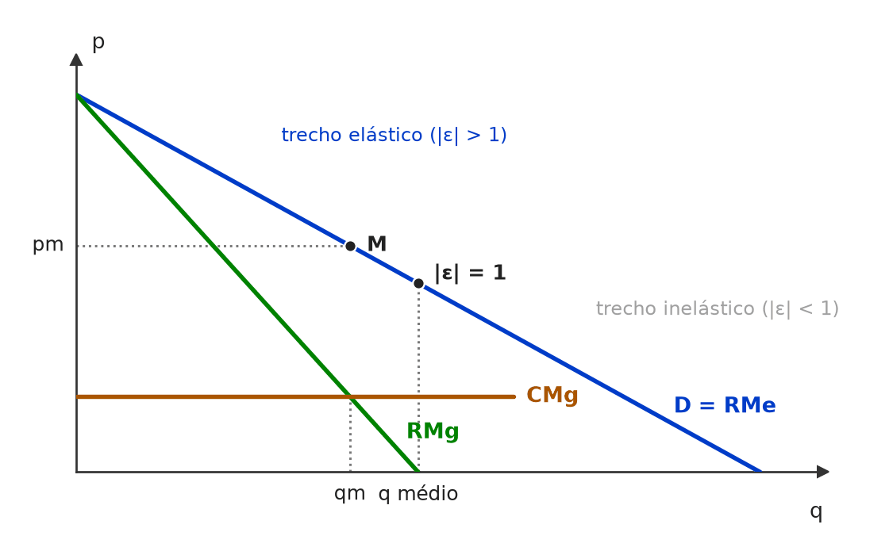 Na demanda linear, a RMg zera no ponto médio, onde |ε| = 1. Como o CMg é positivo, RMg = CMg só ocorre com RMg > 0 — à esquerda do ponto médio, no trecho elástico. 🧐 Dissecando a redação do item: [troca de conceito · contraintuitivo] O item explora a intuição errada de que o monopolista “prefere” consumidores insensíveis ao preço — confusão entre o poder de mercado (maior com demanda menos elástica) e o ponto em que ele opera (sempre elástico). 🔥 Pergunta recorrente em simulados de micro. 😈 Para dificultar:
✍️ Reescrita correta: O monopolista atua na parte elástica da curva de demanda. |
[C/E - Banca não identificada › Markup, elasticidade e poder de mercado]Acerca do monopólio, julgue o item a seguir. Item: O poder de monopólio é maior quanto menor for a elasticidade-preço da demanda. | ✅ CERTO O poder de monopólio é maior quanto menor for a elasticidade-preço da demanda. 🎯 Em poucas palavras: Pelo índice de Lerner, L = 1/|ε|: demanda menos elástica → margem preço–custo maior → mais poder de monopólio. 📖 Destrinchando o tema:
🧐 Dissecando a redação do item: [literalidade] Relação inversa correta. A banca inverteria com “maior for a elasticidade” — mesma armadilha do markup. 😈 Para dificultar:
|
[C/E - Banca não identificada › Markup, elasticidade e poder de mercado]Acerca do monopólio, julgue o item a seguir. Item: O índice de Lerner (L) é um indicador usado para avaliar o grau de poder de mercado ou monopólio que uma empresa possui. Quanto menor, menor será o poder de monopólio. | ✅ CERTO O índice de Lerner (L) é um indicador usado para avaliar o grau de poder de mercado ou monopólio que uma empresa possui. Quanto menor, menor será o poder de monopólio. 🎯 Em poucas palavras: L = (P − CMg)/P, entre 0 (concorrência perfeita, P = CMg) e perto de 1: quanto menor L, menor o poder de monopólio. 📖 Destrinchando o tema:
🧐 Dissecando a redação do item: [literalidade] Definição correta, com relação direta (L menor → poder menor). A versão ERRADA inverteria a relação ou diria que L “é igual à elasticidade” (é o inverso dela). 😈 Para dificultar:
|
[C/E - CEBRASPE › TJ/PA/2025 › Discriminação de preços]No que se refere a estruturas de mercado, cadeias e redes produtivas, competitividade e estratégia empresarial, julgue o item seguinte. Item: Empresas com poder de mercado buscam capturar o excedente do consumidor por meio de estratégias de diferenciação de preços. | ✅ CERTO Empresas com poder de mercado buscam capturar o excedente do consumidor por meio de estratégias de diferenciação de preços. 🎯 Em poucas palavras: “Diferenciação de preços” = discriminação de preços: cobrar valores distintos conforme a disposição a pagar, convertendo excedente do consumidor em lucro. Só é possível com poder de mercado. 📖 Destrinchando o tema:
🧐 Dissecando a redação do item: [paráfrase fiel] O item usa “diferenciação de preços” no lugar do termo técnico “discriminação”. O risco é confundir com diferenciação de produto (a marca da concorrência monopolística), que também gera poder de mercado, mas não é o mecanismo de captura de excedente descrito. 😈 Para dificultar:
|
[C/E - Armstrong › Pré-TPS/2026 › Discriminação de preços]Acerca da discriminação de preços praticada por um monopolista, julgue o item a seguir. Item: Em mercados com discriminação de preços de primeiro grau, o excedente do consumidor é nulo, uma vez que o produtor captura integralmente o valor disposto a ser pago por cada unidade, o que leva à mesma quantidade produzida que em concorrência perfeita, porém com redistribuição do excedente. | ✅ CERTO Em mercados com discriminação de preços de primeiro grau, o excedente do consumidor é nulo, uma vez que o produtor captura integralmente o valor disposto a ser pago por cada unidade, o que leva à mesma quantidade produzida que em concorrência perfeita, porém com redistribuição do excedente. 🎯 Em poucas palavras: Na discriminação perfeita, cada unidade é vendida pelo preço de reserva: EC = 0, a RMg passa a ser a própria demanda e o monopolista produz até P = CMg — a quantidade competitiva, sem peso morto. 📖 Destrinchando o tema:
🧐 Dissecando a redação do item: [contraintuitivo] O item é verdadeiro, mas surpreende quem associa “mais poder de monopólio” a “mais ineficiência”. A banca costuma explorar o par: eficiência alocativa (CERTO) × bem-estar do consumidor (nulo). 😈 Para dificultar:
|
❌ [C/E - Armstrong › Pré-TPS/2026 › Discriminação de preços]Acerca do monopólio e da discriminação de preços, julgue o item a seguir. Item: A discriminação de preços de primeiro grau (perfeita) permite ao monopolista capturar todo o excedente do consumidor; contudo, essa prática resulta em uma perda de peso morto maior do que a observada no monopólio simples (sem discriminação). | ❌ ERRADO A discriminação de preços de primeiro grau (perfeita) permite ao monopolista capturar todo o excedente do consumidor; contudo, essa prática resulta em uma perda de peso morto maior do que a observada no monopólio simples (sem discriminação). 🎯 Em poucas palavras: A primeira oração está certa; a segunda inverte o efeito. Na discriminação perfeita o monopolista vende até P = CMg: a quantidade é a eficiente e o peso morto é zero — menor, e não maior, que no monopólio simples. 📖 Destrinchando o tema:
📈 No gráfico: 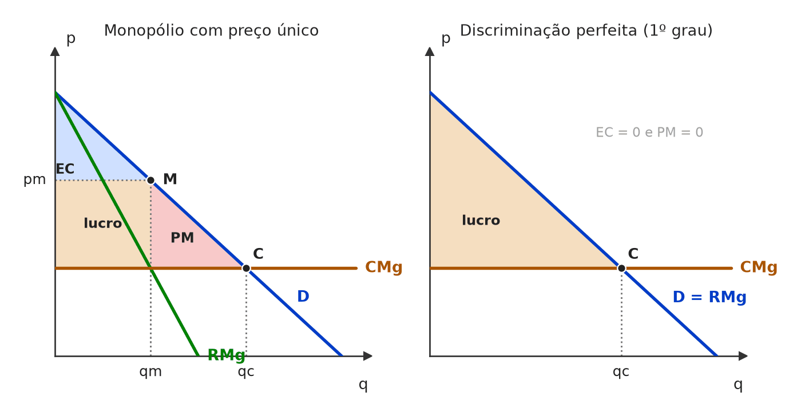 Com preço único, o monopolista para em qm (RMg = CMg) e deixa o triângulo de peso morto (PM). Discriminando perfeitamente, vende cada unidade pelo preço de reserva, vai até qc (P = CMg) e transforma todo o excedente em lucro: o peso morto desaparece. 🧐 Dissecando a redação do item: [inversão · meia-verdade] A 1ª oração é a definição correta e dá confiança; o erro vem depois do “contudo”, que inverte o efeito sobre o peso morto. A armadilha é moral: parece que “capturar tudo” do consumidor tem de ser “pior” — e é, mas na distribuição, não na eficiência. 🔥 A banca alterna os dois lados (EC = 0 × peso morto = 0). 😈 Para dificultar:
✍️ Reescrita correta: A discriminação de preços de primeiro grau (perfeita) permite ao monopolista capturar todo o excedente do consumidor; contudo, essa prática resulta em uma perda de peso morto menor do que a observada no monopólio simples (sem discriminação) — na verdade, nula, pois a produção vai até P = CMg. |
[C/E - Armstrong › Pré-TPS/2026 › Discriminação de preços]Acerca do monopólio e da discriminação de preços, julgue o item a seguir. Item: A discriminação de preços de primeiro grau (ou discriminação perfeita) permite ao monopolista extrair todo o excedente do consumidor, resultando em uma quantidade produzida que é socialmente eficiente (onde o preço iguala o custo marginal), eliminando, portanto, o peso morto. | ✅ CERTO A discriminação de preços de primeiro grau (ou discriminação perfeita) permite ao monopolista extrair todo o excedente do consumidor, resultando em uma quantidade produzida que é socialmente eficiente (onde o preço iguala o custo marginal), eliminando, portanto, o peso morto. 🎯 Em poucas palavras: Cobrando de cada um o preço de reserva, o monopolista tem RMg = P e produz até P = CMg: quantidade de concorrência perfeita, sem peso morto — com todo o excedente virando lucro. 📖 Destrinchando o tema:
🧐 Dissecando a redação do item: [contraintuitivo] Item verdadeiro que contraria a intuição de que o monopólio “mais agressivo” seria também o mais ineficiente. O “portanto” liga corretamente P = CMg ao fim do peso morto. Item gêmeo, na versão errada: ECO-E2-L00290-1. 😈 Para dificultar:
|
[C/E - Nabuco › Discriminação de preços]Em relação à microeconomia, julgue (C ou E) os seguintes itens. Item: Empresas com poder de mercado buscam capturar o excedente do consumidor por meio de estratégias de diferenciação de preços. | ✅ CERTO Empresas com poder de mercado buscam capturar o excedente do consumidor por meio de estratégias de diferenciação de preços. 🎯 Em poucas palavras: A discriminação de preços (aqui chamada “diferenciação”) serve exatamente para converter excedente do consumidor em receita da firma — e exige poder de mercado. 📖 Destrinchando o tema:
🧐 Dissecando a redação do item: [paráfrase fiel] O item troca o termo técnico “discriminação” por “diferenciação de preços” — que não deve ser confundido com diferenciação de produto (concorrência monopolística). O verbo “buscam” descreve o objetivo, não promete sucesso nem ganho de eficiência. 😈 Para dificultar:
|
[C/E - Nabuco › Discriminação de preços]Sobre as estruturas de mercado, julgue (C ou E) os seguintes itens. Item: Um monopolista que pratica discriminação de preços de primeiro grau (perfeita) extrai todo o excedente do consumidor, resultando em uma quantidade produzida socialmente eficiente, idêntica à de concorrência perfeita. | ✅ CERTO Um monopolista que pratica discriminação de preços de primeiro grau (perfeita) extrai todo o excedente do consumidor, resultando em uma quantidade produzida socialmente eficiente, idêntica à de concorrência perfeita. 🎯 Em poucas palavras: Com o preço de reserva de cada comprador, a RMg coincide com a demanda e o monopolista vende até P = CMg — a mesma quantidade da concorrência perfeita. 📖 Destrinchando o tema:
🧐 Dissecando a redação do item: [contraintuitivo] Verdadeiro, mas contraria a ideia de que monopólio sempre produz menos que a concorrência. 🔥 Itens gêmeos no mesmo lote: ECO-E2-L00332-1 (CERTO) e ECO-E2-L00290-1 (versão ERRADA, com peso morto “maior”). 😈 Para dificultar:
|
❌ [C/E - Nidi/Jacqueline Bueno › Simulado Março/2025 › Discriminação de preços]A discriminação de preços refere-se à prática de cobrar preços diferentes para o mesmo bem ou serviço, com base em características específicas dos consumidores ou em condições de mercado. Essa estratégia permite às empresas maximizarem seus lucros, adaptando os preços às diferentes disposições a pagar dos consumidores. A respeito desta prática, julgue o item a seguir. Item: Diferente da discriminação perfeita de primeiro grau, a aplicação da discriminação de preços de segundo grau pressupõe que a empresa não consiga identificar diretamente as demandas individuais dos consumidores antes das compras. | ✅ CERTO Diferente da discriminação perfeita de primeiro grau, a aplicação da discriminação de preços de segundo grau pressupõe que a empresa não consiga identificar diretamente as demandas individuais dos consumidores antes das compras. 🎯 Em poucas palavras: No 2º grau a firma não observa quem é quem: oferece um menu (preços por quantidade, pacotes, versões) e deixa o consumidor se autosselecionar. No 1º grau, ela conhece a disposição a pagar de cada um. 📖 Destrinchando o tema:
🧐 Dissecando a redação do item: [paráfrase fiel] O item define o 2º grau pelo contraste informacional com o 1º, sem citar o mecanismo (menu, quantidade). O risco é confundir com o 3º grau, em que a firma identifica grupos — mas nem ali enxerga a demanda individual. 😈 Para dificultar:
|
[C/E - Nidi/Jacqueline Bueno › Simulado Março/2025 › Discriminação de preços]A discriminação de preços refere-se à prática de cobrar preços diferentes para o mesmo bem ou serviço, com base em características específicas dos consumidores ou em condições de mercado. Essa estratégia permite às empresas maximizarem seus lucros, adaptando os preços às diferentes disposições a pagar dos consumidores. A respeito desta prática, julgue o item a seguir. Item: A condição para o sucesso da discriminação de preços de segundo grau, por meio de descontos de acordo com a quantidade adquirida, é a de que os consumidores que compram grandes quantidades tenham demandas relativamente mais elásticas do que os consumidores que compram pequenas quantidades. | ✅ CERTO A condição para o sucesso da discriminação de preços de segundo grau, por meio de descontos de acordo com a quantidade adquirida, é a de que os consumidores que compram grandes quantidades tenham demandas relativamente mais elásticas do que os consumidores que compram pequenas quantidades. 🎯 Em poucas palavras: Pela lógica do markup inverso, preço unitário menor (desconto) vai para quem é mais sensível ao preço. Se os grandes compradores fossem inelásticos, dar-lhes desconto só reduziria a receita. ⚠️ Gabarito contestável: A justificativa é a da regra de Lerner aplicada a segmentos; na teoria do preço não linear (menus de autosseleção), o grande comprador costuma ser o de maior disposição a pagar, e o desconto marginal serve para induzir a autosseleção, não por ele ser “mais elástico”. Uma das respostas da fonte marca ERRADO por isso. Mantido o CERTO da fonte, que segue a formulação dos manuais introdutórios. 📖 Destrinchando o tema:
🧐 Dissecando a redação do item: [paráfrase fiel] O item aplica a regra do markup inverso ao desconto por quantidade. A armadilha está em pensar que quem compra muito “precisa” do bem (inelástico) e por isso pagaria mais. 🔥 Itens de discriminação quase sempre se decidem pela relação preço maior ↔ demanda menos elástica. 😈 Para dificultar:
|
[C/E - Nidi/Jacqueline Bueno › Simulado Março/2025 › Discriminação de preços]A discriminação de preços refere-se à prática de cobrar preços diferentes para o mesmo bem ou serviço, com base em características específicas dos consumidores ou em condições de mercado. Essa estratégia permite às empresas maximizarem seus lucros, adaptando os preços às diferentes disposições a pagar dos consumidores. A respeito desta prática, julgue o item a seguir. Item: Quando o monopolista faz discriminação de preços de primeiro grau, a alocação final de mercado não é uma solução ótima no sentido de Pareto, pois os consumidores perdem todo seu excedente. | ❌ ERRADO Quando o monopolista faz discriminação de preços de primeiro grau, a alocação final de mercado não é uma solução ótima no sentido de Pareto, pois os consumidores perdem todo seu excedente. 🎯 Em poucas palavras: A discriminação perfeita leva a produção até P = CMg: sem peso morto, a alocação é Pareto-ótima. Os consumidores perdem o excedente, mas isso é questão de distribuição, não de eficiência. 📖 Destrinchando o tema:
🧐 Dissecando a redação do item: [nexo indevido · inversão] O fato citado é verdadeiro (EC = 0), mas não sustenta a conclusão: o “pois” cria um nexo entre distribuição e eficiência que não existe. Pista: sempre que o item justificar ineficiência com “o consumidor perde excedente”, verifique se há peso morto. 😈 Para dificultar:
✍️ Reescrita correta: Quando o monopolista faz discriminação de preços de primeiro grau, a alocação final de mercado é uma solução ótima no sentido de Pareto, embora os consumidores percam todo seu excedente. |
[C/E - Nidi/Jacqueline Bueno › Simulado Março/2025 › Discriminação de preços]A discriminação de preços refere-se à prática de cobrar preços diferentes para o mesmo bem ou serviço, com base em características específicas dos consumidores ou em condições de mercado. Essa estratégia permite às empresas maximizarem seus lucros, adaptando os preços às diferentes disposições a pagar dos consumidores. A respeito desta prática, julgue o item a seguir. Item: Na discriminação de preços de terceiro grau, o preço mais elevado será cobrado dos consumidores com demanda mais elástica. | ❌ ERRADO Na discriminação de preços de terceiro grau, o preço mais elevado será cobrado dos consumidores com demanda mais elástica. 🎯 Em poucas palavras: O monopolista iguala a RMg dos grupos e aplica (P − CMg)/P = 1/|ε| em cada um: o preço mais alto vai para o grupo de demanda menos elástica. 📖 Destrinchando o tema:
🧐 Dissecando a redação do item: [inversão] O item inverte a regra do markup inverso. A armadilha é associar “elástica” a “aguenta variação” e, daí, a “aguenta preço alto”. Pista: elasticidade alta = consumidor que foge do aumento. 😈 Para dificultar:
✍️ Reescrita correta: Na discriminação de preços de terceiro grau, o preço mais elevado será cobrado dos consumidores com demanda menos elástica. |
[C/E - Nabuco › Pré-TPS/2023 › Discriminação de preços]Em relação à microeconomia, julgue (C ou E) os seguintes itens. Item: A Teoria do Consumidor se refere às tentativas do monopolista de cobrar preços diferentes a grupos distintos de pessoas como discriminação de preços. Em relação a essa prática, a discriminação de 1º grau levará a uma solução ótima de Pareto e a discriminação de 3º grau se baseia em características observáveis dos consumidores. | ✅ CERTO A Teoria do Consumidor se refere às tentativas do monopolista de cobrar preços diferentes a grupos distintos de pessoas como discriminação de preços. Em relação a essa prática, a discriminação de 1º grau levará a uma solução ótima de Pareto e a discriminação de 3º grau se baseia em características observáveis dos consumidores. 🎯 Em poucas palavras: Os dois pontos julgáveis estão certos: o 1º grau leva a P = CMg (ótimo de Pareto) e o 3º grau segmenta por características observáveis (idade, condição de estudante, região). ⚠️ Gabarito contestável: A abertura atribui à “Teoria do Consumidor” um tema que os manuais tratam na teoria da firma/monopólio. A banca do curso desconsiderou a imprecisão; numa prova CEBRASPE, ela poderia render ERRADO ou anulação. O conteúdo econômico do item está correto. 📖 Destrinchando o tema:
🧐 Dissecando a redação do item: [literalidade · detalhe] As duas afirmações finais são definições de manual. O ruído está na 1ª frase (“Teoria do Consumidor”), redigida de forma truncada: em item longo, julgue cada oração e pondere se a imprecisão é material — aqui a banca entendeu que não era. 😈 Para dificultar:
|
[C/E - Nabuco › Pré-TPS/2023 › Discriminação de preços]Em relação às estruturas de mercado, julgue (C ou E) os itens subsequentes. Item: Permitir que as empresas discriminem preços leva a ganhos de bem-estar dos consumidores e maiores lucros dos empresários. | ❌ ERRADO Permitir que as empresas discriminem preços leva a ganhos de bem-estar dos consumidores e maiores lucros dos empresários. 🎯 Em poucas palavras: O lucro tende a subir (a firma captura excedente do consumidor), mas o efeito sobre os consumidores é ambíguo: uns pagam menos, outros mais; no 1º grau, o excedente do consumidor chega a zero. 📖 Destrinchando o tema:
🧐 Dissecando a redação do item: [meia-verdade · modulador absoluto] A metade sobre o lucro é verdadeira; a metade sobre os consumidores generaliza um efeito que é, no máximo, possível. O verbo “leva a” afirma resultado certo, sem “pode”. 😈 Para dificultar:
✍️ Reescrita correta: Permitir que as empresas discriminem preços leva a maiores lucros dos empresários, mas tem efeito ambíguo sobre o bem-estar dos consumidores. |
[C/E - Prof. Rodrigo Teixeira › Intensivo Pré-TPS/2023 › Discriminação de preços]A teoria da firma permite analisar a relação entre os custos de produção e as estruturas de mercado. A respeito deste tema, julgue o item a seguir. Item: Um monopolista que consegue cobrar um preço diferente de cada consumidor (discriminação de preços de primeiro grau) pode levar a uma situação eficiente no sentido de Pareto, com a inexistência de peso morto. | ✅ CERTO Um monopolista que consegue cobrar um preço diferente de cada consumidor (discriminação de preços de primeiro grau) pode levar a uma situação eficiente no sentido de Pareto, com a inexistência de peso morto. 🎯 Em poucas palavras: Na discriminação perfeita, cada unidade sai pelo preço de reserva: RMg = P, e a firma produz até P = CMg — a quantidade da concorrência perfeita. Não há peso morto; todo o excedente vira lucro. 📖 Destrinchando o tema:
🧐 Dissecando a redação do item: [contraintuitivo · modulador relativo] Parece absurdo chamar de “eficiente” um arranjo em que o consumidor perde tudo; o item cobra justamente a separação entre eficiência e distribuição. O “pode levar” suaviza e protege o item. 🔥 Tema recorrente: a banca alterna “sem peso morto” (CERTO) e “não Pareto-ótimo porque o consumidor perde o excedente” (ERRADO). 😈 Para dificultar:
|
[C/E - Nabuco › Discriminação de preços]Em relação à teoria microeconômica, julgue (C ou E) os seguintes itens. Item: Se o monopolista consegue discriminar perfeitamente o preço do seu produto, então se diz que o mercado é eficiente no sentido de Pareto. | ✅ CERTO Se o monopolista consegue discriminar perfeitamente o preço do seu produto, então se diz que o mercado é eficiente no sentido de Pareto. 🎯 Em poucas palavras: Na discriminação perfeita, a firma vende até P = CMg: todas as trocas mutuamente vantajosas acontecem, e ninguém pode melhorar sem que outro piore — ótimo de Pareto. 📖 Destrinchando o tema:
🧐 Dissecando a redação do item: [contraintuitivo] A palavra “monopolista” induz a associar ineficiência; o advérbio “perfeitamente” é o que muda o gabarito. Troque por “com preço único” e o item vira ERRADO. 😈 Para dificultar:
|
❌ [C/E - Banca não identificada › 2012 › Discriminação de preços]Acerca das estruturas de mercado e da discriminação de preços, julgue o item. Item: O fato de as passagens aéreas compradas com antecedência serem, em geral, mais baratas que as compradas de última hora é compatível com a suposição de que as companhias aéreas atuam como monopólios que praticam discriminação de preços. | ✅ CERTO O fato de as passagens aéreas compradas com antecedência serem, em geral, mais baratas que as compradas de última hora é compatível com a suposição de que as companhias aéreas atuam como monopólios que praticam discriminação de preços. 🎯 Em poucas palavras: Preço por antecedência separa grupos de elasticidades diferentes: o turista, que planeja e é sensível a preço, paga menos; o executivo, que decide em cima da hora e é pouco sensível, paga mais. Só quem tem poder de mercado consegue fazer isso. 📖 Destrinchando o tema:
🧐 Dissecando a redação do item: [modulador relativo · contraintuitivo] O item é salvo pelo “compatível com a suposição”: não afirma que as aéreas são monopólios, só que o fato não contradiz o modelo. Quem pensa “aéreas competem entre si” marca ERRADO; a banca quer que se reconheça a discriminação por elasticidade. 😈 Para dificultar:
|
[C/E - Banca não identificada › 2010 › Discriminação de preços]Acerca do monopólio e da discriminação de preços, julgue o item. Item: Políticas de dumping adotadas por empresas que vendem seus produtos nos mercados internacionais a um preço inferior ao praticado no mercado doméstico podem ser consideradas ações próprias de monopolista discriminador de preços que visa à maximização de lucros. | ✅ CERTO Políticas de dumping adotadas por empresas que vendem seus produtos nos mercados internacionais a um preço inferior ao praticado no mercado doméstico podem ser consideradas ações próprias de monopolista discriminador de preços que visa à maximização de lucros. 🎯 Em poucas palavras: O dumping é discriminação de preços de 3º grau entre países: a firma cobra menos no exterior, onde a demanda que enfrenta é mais elástica (há concorrentes), e mais em casa, onde tem poder de mercado e está protegida. 📖 Destrinchando o tema:
🧐 Dissecando a redação do item: [paráfrase fiel · modulador relativo] O item reformula a definição de livro-texto (dumping = discriminação internacional de preços) e se protege com “podem ser consideradas”. A armadilha é associar dumping só à prática desleal ou predatória e negar que maximize lucro. 😈 Para dificultar:
|
[DISC - Banca não identificada › Discriminação de preços]Responda à questão a seguir, sobre estratégias de preço de firmas com poder de mercado. Questão: O que é “discriminação de preços”? | 🔵 RESPOSTA É a prática de cobrar preços diferentes pelo mesmo bem ou serviço, de consumidores diferentes ou por unidades diferentes, sem que a diferença reflita custos. Exige poder de mercado, capacidade de separar os consumidores e impossibilidade de revenda. Graus: 1º — cada unidade ao preço de reserva do comprador; 2º — preço varia com a quantidade ou a versão, e o consumidor se autosseleciona; 3º — preços diferentes por grupo, conforme a elasticidade da demanda. 🎯 Em poucas palavras: Discriminar preço é cobrar de cada um conforme sua disposição a pagar, e não conforme o custo, para transformar excedente do consumidor em lucro. 📖 Destrinchando o tema:
🧐 Dissecando a redação do item: [discursiva curta] Em C/E, o tema vira itens como “na discriminação perfeita há peso morto” (ERRADO) ou “descontos por quantidade são discriminação de 2º grau” (CERTO). Atenção a exemplos de fronteira: preço maior na sexta à noite (como no cinema) também reflete pico de demanda e capacidade — é discriminação intertemporal, não o exemplo típico de 3º grau. 🃏 Carta na manga:
|
[C/E - Banca não identificada › Discriminação de preços]Acerca da discriminação de preços praticada por um monopolista, julgue o item a seguir. Item: Na discriminação de preços de terceiro grau, o monopolista atinge o preço máximo que os consumidores estão dispostos a pagar. | ❌ ERRADO Na discriminação de preços de terceiro grau, o monopolista atinge o preço máximo que os consumidores estão dispostos a pagar. 🎯 Em poucas palavras: Cobrar de cada consumidor o seu preço de reserva é a discriminação de primeiro grau (perfeita). A de terceiro grau cobra um preço por grupo. 📖 Destrinchando o tema:
🧐 Dissecando a redação do item: [troca de conceito] A definição (extrair o preço máximo) está certa, mas é do 1º grau, não do 3º. 🔥 Itens de discriminação quase sempre trocam o grau; vale decorar a tríade “indivíduo – quantidade – grupo”. 😈 Para dificultar:
✍️ Reescrita correta: Na discriminação de preços de primeiro grau, o monopolista atinge o preço máximo que os consumidores estão dispostos a pagar. |
[C/E - Banca não identificada › Discriminação de preços]Acerca da discriminação de preços praticada por um monopolista, julgue o item a seguir. Item: No monopólio, a discriminação de preços de segundo grau é famosa pela frase “leve 3, pague 2”. | ✅ CERTO No monopólio, a discriminação de preços de segundo grau é famosa pela frase “leve 3, pague 2”. 🎯 Em poucas palavras: No 2º grau, o preço por unidade depende da quantidade comprada: quem leva mais paga menos por unidade — é a lógica do “leve 3, pague 2”. 📖 Destrinchando o tema:
🧐 Dissecando a redação do item: [literalidade] Item de associação exemplo → grau. A banca o tornaria ERRADO trocando o grau (“primeiro” ou “terceiro”) ou associando o 2º grau a “grupos de consumidores”. 🧠 Mnemônico:
😈 Para dificultar:
|
[C/E - Banca não identificada › Discriminação de preços]Acerca da discriminação de preços praticada por um monopolista, julgue o item a seguir. Item: No monopólio, a discriminação de preços de terceiro grau divide os compradores em grupos baseados em suas características ou comportamento e cobra preços diferentes de cada grupo. | ✅ CERTO No monopólio, a discriminação de preços de terceiro grau divide os compradores em grupos baseados em suas características ou comportamento e cobra preços diferentes de cada grupo. 🎯 Em poucas palavras: No 3º grau, o critério é o grupo (idade, condição de estudante, região, horário), não a quantidade comprada: cada grupo paga um preço. 📖 Destrinchando o tema:
🧐 Dissecando a redação do item: [literalidade] Definição de manual, reproduzida fielmente. A pegadinha possível estaria em trocar “características” por “quantidade comprada” (2º grau) ou afirmar que o grupo mais elástico paga mais. 😈 Para dificultar:
|
❌ [C/E - CEBRASPE › ANTT/2023 › Monopólio natural e regulação]Apesar de o modelo de concorrência perfeita ser o fundamento para os estudos de equilíbrio de mercado, o estudo de mercados reais apresenta outras estruturas, em geral envolvendo a fuga de um ou mais pressupostos da concorrência perfeita. Acerca dessas estruturas de mercado, julgue o item a seguir. Item: A administração de uma rodovia federal sob concessão é um monopólio, pois tem apenas um provedor do serviço, apesar de ser livre a entrada de concorrentes. | ❌ ERRADO A administração de uma rodovia federal sob concessão é um monopólio, pois tem apenas um provedor do serviço, apesar de ser livre a entrada de concorrentes. 🎯 Em poucas palavras: Monopólio pressupõe barreiras à entrada. Na rodovia concedida, elas são legais (o contrato dá exclusividade) e econômicas (ninguém duplica uma estrada): a entrada não é livre. 📖 Destrinchando o tema:
🧐 Dissecando a redação do item: [contradição · meia-verdade] A 1ª parte (monopólio, um só provedor) está certa; o erro foi enxertado na concessiva “apesar de ser livre a entrada”, que contradiz o próprio conceito de monopólio e a natureza da concessão. Pista: “sob concessão” já anuncia barreira legal. 😈 Para dificultar:
✍️ Reescrita correta: A administração de uma rodovia federal sob concessão é um monopólio, pois tem apenas um provedor do serviço e não há livre entrada de concorrentes. |
❌ [C/E - CEBRASPE › ANTT/2023 › Monopólio natural e regulação]Acerca da teoria da regulação e das estruturas de mercado, julgue o item subsequente. Item: Na regulação de um monopólio natural relativo à prestação de um serviço público, a eficiência econômica pode ser obtida por meio da fixação do preço da prestação do serviço em patamar equivalente ao seu custo marginal de produção. | ❌ ERRADO Na regulação de um monopólio natural relativo à prestação de um serviço público, a eficiência econômica pode ser obtida por meio da fixação do preço da prestação do serviço em patamar equivalente ao seu custo marginal de produção. 🎯 Em poucas palavras: No monopólio natural CMg < CMe: com P = CMg a firma tem prejuízo e, sem subsídio, sai do mercado. A regulação viável fixa o preço no custo médio (lucro zero) — foi essa a leitura da banca. ⚠️ Gabarito contestável: No sentido estrito, P = CMg é a condição de eficiência alocativa (o “primeiro melhor”), e o “pode ser obtida” admitiria essa solução se acompanhada de subsídio ou de tarifa em duas partes. O ERRADO se sustenta na leitura de “eficiência econômica” como resultado sustentável da regulação: sem cobrir o custo médio, o serviço não se mantém. Em prova, siga a banca: monopólio natural + P = CMg → prejuízo → ERRADO. 📖 Destrinchando o tema:
📈 No gráfico: 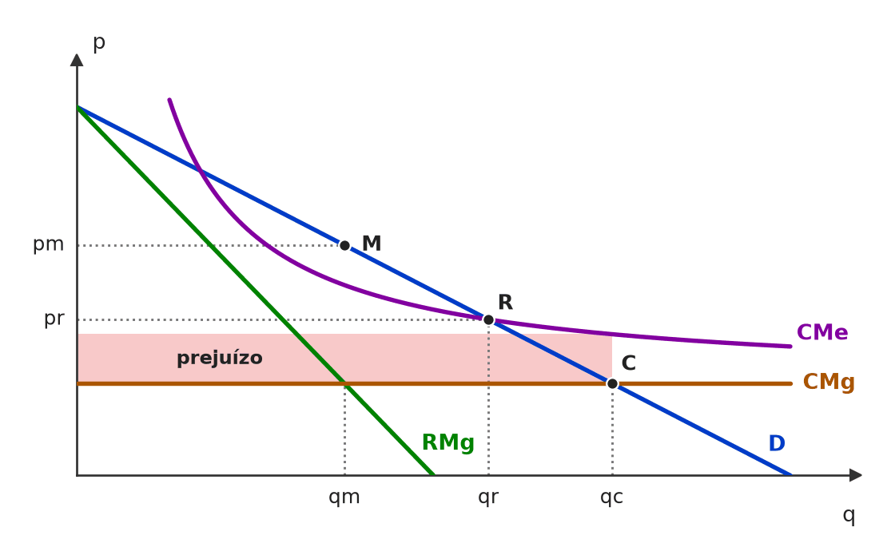 Com CMe decrescente, o CMg fica sempre abaixo dele. Preço = CMg (ponto C) dá a quantidade eficiente, mas a receita não cobre o custo médio: o retângulo vermelho é o prejuízo. Preço = CMe (ponto R) zera o lucro e torna o serviço viável, com quantidade entre a de monopólio (M) e a eficiente. 🧐 Dissecando a redação do item: [troca de conceito] O item aplica ao monopólio natural a regra de eficiência válida para firmas com custos crescentes (P = CMg), ignorando que ali o CMg está abaixo do CMe. A palavra-gatilho é “monopólio natural”: ela anuncia custo médio decrescente. 🔥 A CEBRASPE cobra o dilema P = CMg × P = CMe com frequência em provas de agências reguladoras. 😈 Para dificultar:
✍️ Reescrita correta: Na regulação de um monopólio natural relativo à prestação de um serviço público, a solução viável, com lucro econômico nulo e sem subsídio, pode ser obtida por meio da fixação do preço da prestação do serviço em patamar equivalente ao seu custo médio de produção. |
❌ [C/E - FCC › ManausPrev/Analista Previdenciário/2021 › Monopólio natural e regulação]Acerca da regulação de monopólios naturais, julgue o item a seguir (questão adaptada). Item: A regulação do preço cobrado por um monopólio natural leva a uma redução do bem-estar dos consumidores se for equiparado ao seu custo marginal de produção. | ❌ ERRADO A regulação do preço cobrado por um monopólio natural leva a uma redução do bem-estar dos consumidores se for equiparado ao seu custo marginal de produção. 🎯 Em poucas palavras: Preço = CMg é o regime mais favorável ao consumidor: preço mais baixo e quantidade maior que no monopólio livre. O excedente do consumidor aumenta; o problema é da firma, que passa a ter prejuízo. 📖 Destrinchando o tema:
📈 No gráfico: 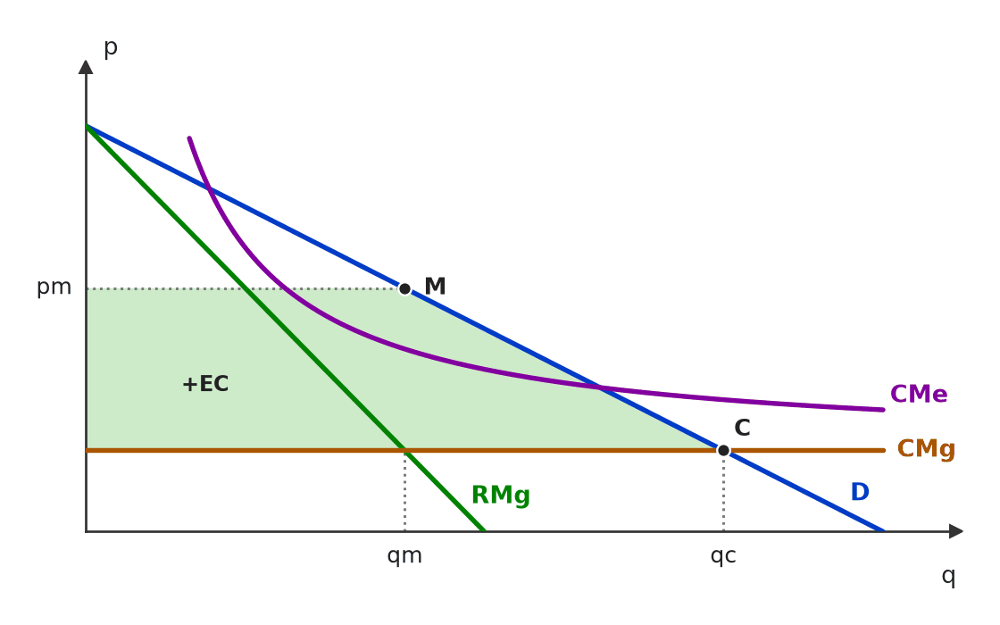 Sem regulação, o monopolista natural fica em M (RMg = CMg): preço pm alto e quantidade qm baixa. Com o preço tabelado no CMg, o mercado vai a C: o consumidor paga menos e compra mais, e a área verde (+EC) é o ganho de excedente do consumidor. O ponto C fica abaixo do CMe: é a firma, não o consumidor, que perde. 🧐 Dissecando a redação do item: [inversão] O item troca o sinal do efeito sobre o consumidor, apostando que o candidato confunda o dano à firma (prejuízo com P = CMg < CMe) com dano ao consumidor. Pergunte sempre: bem-estar de quem? 🔥 FCC e CEBRASPE alternam as duas perspectivas no mesmo tema. 😈 Para dificultar:
✍️ Reescrita correta: A regulação do preço cobrado por um monopólio natural leva a um aumento do bem-estar dos consumidores se for equiparado ao seu custo marginal de produção, embora imponha prejuízo à firma. |
[C/E - Clipping › Simuladão Março/2026 › Monopólio natural e regulação]Acerca das estruturas de mercado, julgue o item a seguir. Item: Um monopólio natural, caracterizado por custos marginais crescentes, justifica a entrada de múltiplas empresas para promover concorrência e eficiência alocativa no mercado. | ❌ ERRADO Um monopólio natural, caracterizado por custos marginais crescentes, justifica a entrada de múltiplas empresas para promover concorrência e eficiência alocativa no mercado. 🎯 Em poucas palavras: O monopólio natural se define por custo médio decrescente em toda a faixa da demanda (economias de escala). Aí uma só firma produz mais barato que várias: a entrada elevaria o custo, não o reduziria. 📖 Destrinchando o tema:
🧐 Dissecando a redação do item: [troca de conceito · nexo indevido] Dois erros empilhados: a estrutura de custos trocada (CMg crescente) e a política deduzida dela (entrada de várias firmas). Qualquer um basta para o ERRADO. 😈 Para dificultar:
✍️ Reescrita correta: Um monopólio natural, caracterizado por custos médios decrescentes em toda a faixa relevante da demanda, não justifica a entrada de múltiplas empresas para promover concorrência e eficiência alocativa no mercado, mas sim a regulação de uma única firma. |
[C/E - Armstrong › Pré-TPS/2026 › Monopólio natural e regulação]Acerca do monopólio natural e de sua regulação, julgue o item a seguir. Item: A fixação do preço igual ao custo marginal por parte de um regulador governamental em um monopólio natural gera alocação eficiente de recursos e não compromete a sustentabilidade financeira da empresa, dado que o custo marginal reflete o custo total médio decrescente do setor. | ❌ ERRADO A fixação do preço igual ao custo marginal por parte de um regulador governamental em um monopólio natural gera alocação eficiente de recursos e não compromete a sustentabilidade financeira da empresa, dado que o custo marginal reflete o custo total médio decrescente do setor. 🎯 Em poucas palavras: Com CMe decrescente, o CMg fica abaixo do CMe. Preço = CMg é eficiente, mas fica abaixo do custo médio: a empresa tem prejuízo. 📖 Destrinchando o tema:
📈 No gráfico: 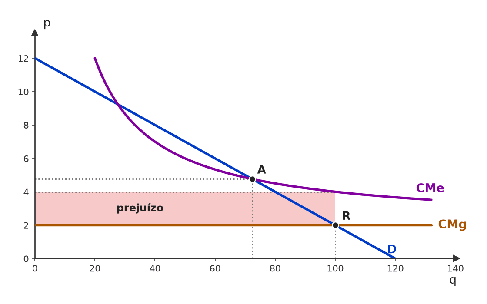 No monopólio natural, o CMe cai em toda a faixa da demanda e o CMg fica abaixo dele. Com preço = CMg (ponto R), a firma vende 100 a 2, mas seu custo médio é 4: o retângulo destacado é o prejuízo (2 × 100 = 200). Com preço = CMe (ponto A), ela empata, porém produz menos. 🧐 Dissecando a redação do item: [meia-verdade · nexo indevido] A primeira parte é verdadeira (P = CMg é eficiente); o erro foi enxertado na consequência financeira e numa justificativa falsa (“o CMg reflete o CMe”). Pista: custo médio decrescente implica CMg abaixo dele. 😈 Para dificultar:
✍️ Reescrita correta: A fixação do preço igual ao custo marginal por parte de um regulador governamental em um monopólio natural gera alocação eficiente de recursos, mas compromete a sustentabilidade financeira da empresa, dado que, com custo total médio decrescente, o custo marginal fica abaixo do custo médio. |
[C/E - Nabuco › Monopólio natural e regulação]Em relação às estruturas de mercado, julgue (C ou E) os seguintes itens. Item: A imposição de um teto de preços pode aumentar o bem-estar da economia em mercados cuja estrutura se caracteriza como um monopólio. | ✅ CERTO A imposição de um teto de preços pode aumentar o bem-estar da economia em mercados cuja estrutura se caracteriza como um monopólio. 🎯 Em poucas palavras: Um teto abaixo do preço de monopólio (mas não abaixo do ponto em que a demanda cruza o CMg) faz o monopolista vender mais, e o peso morto diminui. 📖 Destrinchando o tema:
🧐 Dissecando a redação do item: [contraintuitivo · modulador relativo] Quem traz do mercado competitivo a ideia de que teto sempre gera escassez e peso morto marca ERRADO. O “pode” salva o item: o ganho depende de onde o teto é fixado. Item vizinho, na versão errada: ECO-E2-L01195-1. 😈 Para dificultar:
|
[C/E - Nidi/Jacqueline Bueno › Outubro/2024 › Monopólio natural e regulação]Considerando a relação entre o Estado e diferentes estruturas de mercado existentes numa economia mista, julgue o item a seguir. Item: O monopólio natural é uma situação onde um único fornecedor pode atender toda a demanda de mercado a um custo inferior do que dois ou mais concorrentes e, portanto, é capaz de maximizar a eficiência econômica cobrando baixos preços sem que haja necessidade de intervenção estatal. | ❌ ERRADO O monopólio natural é uma situação onde um único fornecedor pode atender toda a demanda de mercado a um custo inferior do que dois ou mais concorrentes e, portanto, é capaz de maximizar a eficiência econômica cobrando baixos preços sem que haja necessidade de intervenção estatal. 🎯 Em poucas palavras: A definição está certa; a conclusão, não. Custo baixo não vira preço baixo: o monopolista natural maximiza lucro (RMg = CMg, P > CMg) e gera peso morto. Daí a regulação. 📖 Destrinchando o tema:
🧐 Dissecando a redação do item: [nexo indevido · meia-verdade] A definição da 1ª oração é literal e verdadeira; o “e, portanto,” cria um nexo falso entre custo baixo e preço baixo, e o “sem necessidade de intervenção estatal” nega a principal implicação de política. 🔥 Padrão recorrente: definição correta + conclusão de política invertida. 😈 Para dificultar:
✍️ Reescrita correta: O monopólio natural é uma situação onde um único fornecedor pode atender toda a demanda de mercado a um custo inferior do que dois ou mais concorrentes e, portanto, tende a exigir regulação estatal, pois, livre, cobraria preços acima do custo marginal e geraria peso morto. |
❌ [C/E - Clipping › Simulado 07/2023 › Monopólio natural e regulação]Acerca do monopólio natural, julgue o item. Item: O monopólio natural é um tipo de monopólio em que uma única empresa é capaz de fornecer o bem ou serviço a um custo mais baixo do que várias empresas menores, devido a economias de escala ou a vantagens tecnológicas. | ✅ CERTO O monopólio natural é um tipo de monopólio em que uma única empresa é capaz de fornecer o bem ou serviço a um custo mais baixo do que várias empresas menores, devido a economias de escala ou a vantagens tecnológicas. 🎯 Em poucas palavras: É a definição: há monopólio natural quando uma firma produz a quantidade do mercado mais barato que duas ou mais (custo subaditivo), em geral por economias de escala. 📖 Destrinchando o tema:
🧐 Dissecando a redação do item: [literalidade] Definição de manual. O “ou vantagens tecnológicas” poderia parecer ampliação indevida, mas tecnologia de rede é justamente a origem das economias de escala; o critério decisivo — custo menor com uma só firma — está correto. 😈 Para dificultar:
|
[C/E - Nabuco › Pré-TPS/2023 › Monopólio natural e regulação]Em relação à microeconomia, julgue (C ou E) os seguintes itens. Item: Em setores caracterizados como monopólios naturais, o nível de produção competitivo, embora eficiente no sentido de Pareto, não é lucrativo. | ✅ CERTO Em setores caracterizados como monopólios naturais, o nível de produção competitivo, embora eficiente no sentido de Pareto, não é lucrativo. 🎯 Em poucas palavras: O nível competitivo é onde P = CMg (eficiente). No monopólio natural o CMe é decrescente e fica acima do CMg; logo, nesse ponto P < CMe — prejuízo. 📖 Destrinchando o tema:
🧐 Dissecando a redação do item: [literalidade] Afirmação de manual, com “embora” separando eficiência (verdadeira) de viabilidade (o ponto decisivo). Trocar “não é lucrativo” por “gera lucro normal” tornaria o item ERRADO. 😈 Para dificultar:
|
[C/E - Nabuco › Pré-TPS/2023 › Monopólio natural e regulação]Em relação às estruturas de mercado, julgue (C ou E) os itens subsequentes. Item: Uma boa forma de regular um monopolista natural é exigir que ele fixe seu preço igual aos custos marginais oriundos de determinada atividade econômica. | ❌ ERRADO Uma boa forma de regular um monopolista natural é exigir que ele fixe seu preço igual aos custos marginais oriundos de determinada atividade econômica. 🎯 Em poucas palavras: No monopólio natural, CMg < CMe: preço = CMg gera prejuízo e a firma sai do mercado sem subsídio. A regra usual é preço = custo médio. 📖 Destrinchando o tema:
🧐 Dissecando a redação do item: [troca de conceito] Transporta a regra de eficiência do mercado competitivo para um setor com custos médios decrescentes. A expressão “boa forma de regular” exige viabilidade, que P = CMg não oferece. Item vizinho: ECO-E2-L01196-1 (CERTO). 😈 Para dificultar:
✍️ Reescrita correta: Uma boa forma de regular um monopolista natural é exigir que ele fixe seu preço igual aos custos médios oriundos de determinada atividade econômica, pois o preço igual ao custo marginal geraria prejuízo. |
[C/E - Nabuco › Pré-TPS/2023 › Monopólio natural e regulação]Em relação às estruturas de mercado de concorrência perfeita e de monopólio, julgue (C ou E) os itens que se seguem. Item: A fixação de um preço máximo para o produto de um monopolista deve necessariamente implicar a redução da quantidade produzida por esse monopolista e, portanto, um excesso de demanda no mercado desse produto. | ❌ ERRADO A fixação de um preço máximo para o produto de um monopolista deve necessariamente implicar a redução da quantidade produzida por esse monopolista e, portanto, um excesso de demanda no mercado desse produto. 🎯 Em poucas palavras: O monopólio não tem curva de oferta. Um teto abaixo do preço de monopólio, mas acima do CMg, faz a firma vender mais (até a demanda), sem escassez. 📖 Destrinchando o tema:
📈 No gráfico: 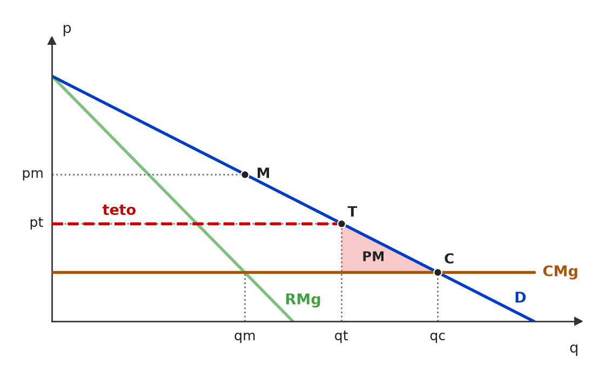 Sem regulação, o monopolista produz qm ao preço pm. Com teto em pt (entre pm e o CMg), a receita marginal vira o próprio teto até a demanda: ele passa a vender qt > qm. A quantidade aumenta, não há excesso de demanda e o peso morto encolhe para o triângulo entre qt e qc. 🧐 Dissecando a redação do item: [modulador absoluto · troca de conceito] Aplica ao monopólio a análise de teto do mercado competitivo e a blinda com “necessariamente”. Pista: “quantidade produzida por esse monopolista” pressupõe uma curva de oferta que o monopólio não tem. Item vizinho, na versão certa: ECO-E2-L00534-1. 😈 Para dificultar:
✍️ Reescrita correta: A fixação de um preço máximo para o produto de um monopolista pode implicar o aumento da quantidade produzida por esse monopolista e, portanto, a redução do peso morto, sem excesso de demanda, no mercado desse produto, se o teto ficar entre o custo marginal e o preço de monopólio. |
[C/E - Nabuco › Pré-TPS/2023 › Monopólio natural e regulação]A respeito das empresas monopolistas, julgue (C ou E) os itens subsequentes. Item: No monopólio natural, o preço socialmente ótimo (igual ao custo marginal) causaria prejuízo ao monopolista. | ✅ CERTO No monopólio natural, o preço socialmente ótimo (igual ao custo marginal) causaria prejuízo ao monopolista. 🎯 Em poucas palavras: Com CMe decrescente, CMg < CMe. O preço eficiente (P = CMg) fica abaixo do custo médio: a receita não cobre os custos fixos — prejuízo. 📖 Destrinchando o tema:
🧐 Dissecando a redação do item: [literalidade] Conclusão-padrão do gráfico de monopólio natural. Itens vizinhos cobram o mesmo ponto pelo lado errado: ECO-E2-L01019-1 (“boa forma de regular” → ERRADO) e ECO-E2-L00743-1. 😈 Para dificultar:
|
[C/E - Nabuco › Pré-TPS/2023 › Monopólio natural e regulação]A respeito das empresas monopolistas, julgue (C ou E) os itens subsequentes. Item: Um monopólio natural decorre da posse por parte de uma empresa da única fonte de um insumo natural que é necessário para a produção de determinado bem. | ❌ ERRADO Um monopólio natural decorre da posse por parte de uma empresa da única fonte de um insumo natural que é necessário para a produção de determinado bem. 🎯 Em poucas palavras: O monopólio natural decorre de economias de escala na faixa relevante (CMe decrescente), não da posse de um recurso. Controle de insumo único é outra barreira: o monopólio de recurso. 📖 Destrinchando o tema:
🧐 Dissecando a redação do item: [troca de conceito] O item explora a palavra “natural” para descrever o monopólio de recurso (“insumo natural”). Pista: a causa apontada é a posse, e não os custos — o critério que define o monopólio natural. 😈 Para dificultar:
✍️ Reescrita correta: Um monopólio natural decorre de economias de escala na faixa relevante de produção, que permitem a uma única empresa abastecer todo o mercado a custo menor do que duas ou mais; a posse da única fonte de um insumo necessário caracteriza o monopólio de recurso. |
[C/E - Prof. Rodrigo Teixeira › Intensivo Pré-TPS/2023 › Monopólio natural e regulação]A teoria da firma permite analisar a relação entre os custos de produção e as estruturas de mercado. A respeito deste tema, julgue o item a seguir. Item: Por possuir elevados custos fixos em laboratórios e pagamento de pesquisadores, porém baixos custos marginais de produção após a descoberta da fórmula de uma vacina, a produção de vacinas tende a apresentar estrutura de mercado com poder de monopólio, sujeita a patentes e ganhos de monopólio que garantem o pagamento dos custos fixos e irrecuperáveis aos seus produtores. | ✅ CERTO Por possuir elevados custos fixos em laboratórios e pagamento de pesquisadores, porém baixos custos marginais de produção após a descoberta da fórmula de uma vacina, a produção de vacinas tende a apresentar estrutura de mercado com poder de monopólio, sujeita a patentes e ganhos de monopólio que garantem o pagamento dos custos fixos e irrecuperáveis aos seus produtores. 🎯 Em poucas palavras: Custo fixo e irrecuperável alto + custo marginal baixo: se o preço caísse ao CMg (cópia livre), ninguém recuperaria a pesquisa. A patente cria monopólio temporário para que o preço acima do CMg pague o investimento. 📖 Destrinchando o tema:
🧐 Dissecando a redação do item: [paráfrase fiel · modulador relativo] O item descreve a justificativa econômica padrão das patentes, com o modulador “tende a” protegendo a generalização. O risco é o candidato reagir ao tom (“ganhos de monopólio” soa negativo) e marcar ERRADO. 🔥 O par patente × peso morto é recorrente: veja o item gêmeo sobre “perda líquida sempre”. 😈 Para dificultar:
|
[C/E - FEPESE › Celesc/Economista/2019 › Monopólio natural e regulação]Acerca do monopólio natural, julgue o item a seguir (questão adaptada). Item: A empresa detentora de um monopólio natural oferta um bem a um custo médio menor do que duas ou mais empresas. | ✅ CERTO A empresa detentora de um monopólio natural oferta um bem a um custo médio menor do que duas ou mais empresas. 🎯 Em poucas palavras: É a própria definição de monopólio natural: a tecnologia faz com que uma única firma atenda o mercado a custo médio menor do que se a produção fosse repartida entre várias (subaditividade de custos). 📖 Destrinchando o tema:
🧐 Dissecando a redação do item: [literalidade] O item reproduz a definição de manual (Pindyck e Rubinfeld, Mankiw). O risco está em confundir “custo médio menor” com “preço menor” ou “lucro menor”: o monopolista natural produz barato, mas, sem regulação, cobra caro. 😈 Para dificultar:
|
[C/E - Nabuco › Monopólio natural e regulação]Em relação às estruturas de mercado e às falhas de mercado, julgue (C ou E) os seguintes itens. Item: Na regulação de um monopólio natural relativo à prestação de um serviço público, a eficiência econômica pode ser obtida por meio da fixação do preço da prestação do serviço em patamar equivalente ao seu custo marginal de produção. | ❌ ERRADO Na regulação de um monopólio natural relativo à prestação de um serviço público, a eficiência econômica pode ser obtida por meio da fixação do preço da prestação do serviço em patamar equivalente ao seu custo marginal de produção. 🎯 Em poucas palavras: No monopólio natural o CMe cai em toda a faixa relevante, logo CMg < CMe. Preço = CMg não cobre o custo médio: a empresa tem prejuízo e, sem subsídio, sai do mercado. ⚠️ Gabarito contestável: P = CMg é, por definição, a regra de eficiência alocativa (first best); o que falha é a viabilidade financeira. Com subsídio ou tarifa em duas partes, a eficiência pode ser obtida — o que torna o item defensável como CERTO. O gabarito ERRADO lê “eficiência econômica” como solução regulatória sustentável sem transferência. 📖 Destrinchando o tema:
📈 No gráfico: 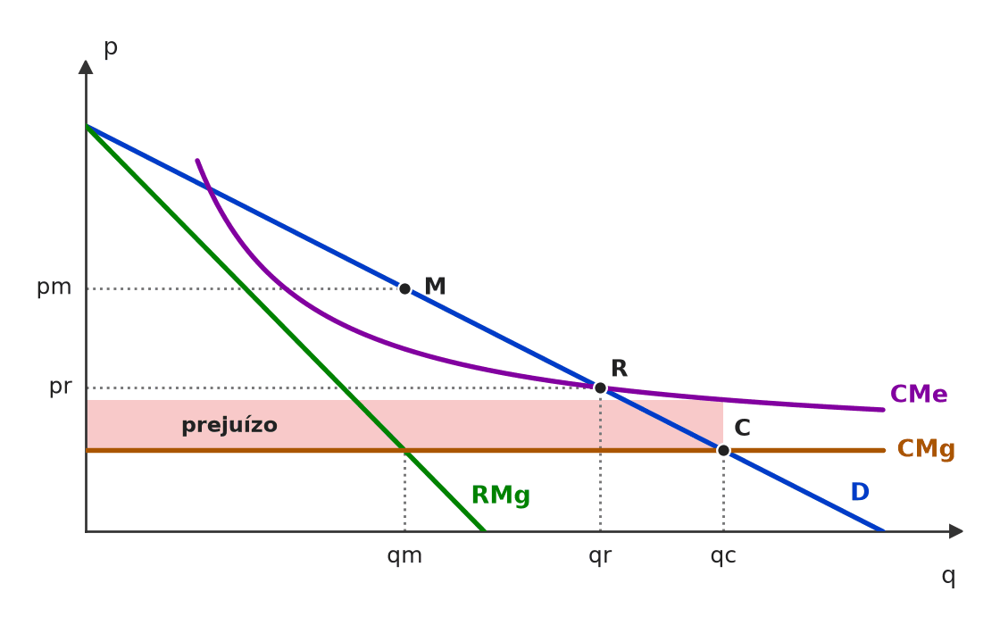 No monopólio natural o CMe cai em toda a faixa relevante e fica acima do CMg. Com preço = CMg (ponto C), a produção é eficiente, mas o preço não cobre o custo médio: o retângulo sombreado entre o CMe e o CMg é o prejuízo. Com preço = CMe (ponto R), o lucro é zero e a operação se sustenta. 🧐 Dissecando a redação do item: [troca de conceito] O item aplica ao monopólio natural a regra de eficiência do mercado competitivo sem considerar o custo fixo. O “pode” deixa a porta aberta — por isso o gabarito é discutível. Itens vizinhos: ECO-E2-L01019-1 (ERRADO) e ECO-E2-L01196-1 (CERTO). 😈 Para dificultar:
✍️ Reescrita correta: Na regulação de um monopólio natural relativo à prestação de um serviço público, a eficiência econômica não pode ser obtida, sem subsídio, por meio da fixação do preço da prestação do serviço em patamar equivalente ao seu custo marginal de produção, pois esse preço fica abaixo do custo médio e gera prejuízo. |
[C/E - Nidi/Jacqueline Bueno › Monopólio natural e regulação]Sobre os diferentes tipos de bens, as falhas de mercado e o papel do Estado no ajuste da oferta e correções de problemas decorrentes da livre flutuação dos mercados, julgue o item a seguir. Item: Numa situação de monopólio natural, caso a empresa opere em um nível em que o preço de mercado se iguale ao custo marginal, ela poderia ofertar uma quantidade eficiente de bens, mas não seria capaz de cobrir seus custos médios. Por isso, argumenta-se em favor da estatização dos bens e serviços que apresentam esta característica, uma vez que a privatização envolve um custo de negociação e regulamentação que pode ser evitado. | ✅ CERTO Numa situação de monopólio natural, caso a empresa opere em um nível em que o preço de mercado se iguale ao custo marginal, ela poderia ofertar uma quantidade eficiente de bens, mas não seria capaz de cobrir seus custos médios. Por isso, argumenta-se em favor da estatização dos bens e serviços que apresentam esta característica, uma vez que a privatização envolve um custo de negociação e regulamentação que pode ser evitado. 🎯 Em poucas palavras: Com CMg < CMe, P = CMg é eficiente mas dá prejuízo. Uma das respostas ao dilema é a provisão estatal (o Estado absorve o prejuízo e evita custos de contratar e regular um operador privado). O item diz “argumenta-se”: descreve um argumento, não o endossa como único. 📖 Destrinchando o tema:
🧐 Dissecando a redação do item: [modulador relativo · paráfrase fiel] A 1ª frase é a definição técnica do dilema; a 2ª apresenta um argumento com “argumenta-se”, que protege o item de ser lido como prescrição. Quem acha que “privatizar é sempre melhor” marca ERRADO por ideologia. O que se julga é se o argumento existe e é coerente — e é. 😈 Para dificultar:
|
[C/E - Banca não identificada › 2018 › Monopólio natural e regulação]Acerca do monopólio natural e de sua regulação, julgue o item. Item: O serviço de fornecimento de água e saneamento em uma cidade não constitui monopólio natural, uma vez que a atuação exclusiva da empresa em sua área é definida por lei ou contrato de concessão. | ❌ ERRADO O serviço de fornecimento de água e saneamento em uma cidade não constitui monopólio natural, uma vez que a atuação exclusiva da empresa em sua área é definida por lei ou contrato de concessão. 🎯 Em poucas palavras: O que define o monopólio natural é a estrutura de custos (uma rede só atende a cidade mais barato que duas), não a origem jurídica da exclusividade. Saneamento é o exemplo clássico. 📖 Destrinchando o tema:
🧐 Dissecando a redação do item: [nexo indevido · troca de conceito] O fato citado é verdadeiro (a exclusividade vem de lei ou contrato), mas a conclusão não decorre dele: confunde monopólio legal com natural. Pista: o critério do monopólio natural é econômico (custos), nunca jurídico. 😈 Para dificultar:
✍️ Reescrita correta: O serviço de fornecimento de água e saneamento em uma cidade constitui monopólio natural, em razão de sua estrutura de custos, ainda que a atuação exclusiva da empresa em sua área seja definida por lei ou contrato de concessão. |
[C/E - Banca não identificada › 2017 › Monopólio natural e regulação]Com relação a um produto de um mercado que está sob a situação de monopólio natural, o gráfico a seguir mostra: a curva de demanda, D, que corresponde ao preço de venda, p, para cada quantidade, Q, demandada pelo mercado, e a curva de custo marginal, C, que corresponde ao custo marginal, CMg, quando a produção atinge Q unidades. Nesse gráfico, CMg e p estão medidos na mesma escala do eixo vertical. Tendo como referência as informações e o gráfico apresentados, bem como conceitos a eles pertinentes, julgue o item. Curva de demanda (D) e curva de custo marginal (C) de um produto sob monopólio natural; CMg e p na mesma escala do eixo vertical. (figura redesenhada; traçado aproximado) Item: A característica de um monopólio natural é a existência de custos marginais baixos e custos fixos muito altos, impedindo a entrada de concorrentes. | ✅ CERTO A característica de um monopólio natural é a existência de custos marginais baixos e custos fixos muito altos, impedindo a entrada de concorrentes. 🎯 Em poucas palavras: Custo fixo alto diluído por muitas unidades de custo marginal baixo = custo médio decrescente em toda a faixa relevante da demanda: uma só firma atende o mercado mais barato, e um entrante, menor, não consegue competir. 📖 Destrinchando o tema:
🧐 Dissecando a redação do item: [paráfrase fiel · detalhe] Descrição simplificada mas correta da estrutura de custos. A dúvida possível é o “impedindo a entrada”: no monopólio natural a barreira vem da própria escala, e a banca aceitou o nexo. O rigor seria “custo médio decrescente em toda a demanda”. 😈 Para dificultar:
|
[C/E - Banca não identificada › Monopólio natural e regulação]Acerca do monopólio natural e de sua regulação, julgue o item a seguir. Item: No monopólio natural o custo fixo é baixo. | ❌ ERRADO No monopólio natural o custo fixo é baixo. 🎯 Em poucas palavras: O monopólio natural nasce de custo fixo alto e custo marginal baixo: o custo médio cai em toda a faixa da demanda, e uma só firma atende o mercado mais barato que várias. 📖 Destrinchando o tema:
🧐 Dissecando a redação do item: [inversão] Inverte o atributo de custo que define o monopólio natural. Pista: se o custo fixo fosse baixo, a entrada seria fácil e não haveria razão “natural” para uma só firma. 😈 Para dificultar:
✍️ Reescrita correta: No monopólio natural o custo fixo é alto. |